Cuaderno sin barniz


Un filósofo que pasó años derribando teorías del lenguaje termina sus últimos meses preguntando por qué no se puede imaginar un blanco transparente. La pregunta parece trivial hasta que uno intenta responderla y descubre que no puede — y que esa imposibilidad, no la física, es el verdadero objeto de estudio. El libro no explica el color: expone que casi todo lo que creemos saber sobre él es gramática disfrazada de percepción.
Un cuaderno delgado y sin currículum de portada, ordenado en números que se interrumpen, se repiten, dudan de sí mismos — como notas que alguien no llegó a limpiar antes de morir.
Esto no es un tratado sobre el color: es el residuo de una obsesión de los últimos dieciocho meses de una vida. Wittgenstein no pregunta qué es el color — pregunta bajo qué reglas decimos las cosas que decimos sobre él, y en ese desplazamiento mínimo cabe todo el libro. Nombrar este corpus como “reflexiones” ya es tomar partido: no resume una posición, persigue una gramática que se le escapa aforismo tras aforismo, sin llegar nunca a cerrarse.
Título — Bemerkungen über die Farben Autor — Ludwig Wittgenstein Año — 1977 (edición póstuma; escrito entre 1950 y 1951) Género — Ensayo filosófico, forma aforística Extensión estimada — 18.839 palabras, aproximadamente 75 páginas, 3 secciones (Teil I, II, III) Idioma original — Alemán Palabra más frecuente con contenido — Farbe (133 apariciones) / Farben (125). Confirma exactamente lo que el corpus declara ser: un libro que no deja de nombrar aquello que no logra definir.
El libro no narra: interroga. A lo largo de tres partes numeradas, Wittgenstein somete el vocabulario del color a una presión constante —¿puede existir un blanco transparente?, ¿es el verde una mezcla de azul y amarillo o una tercera cosa?, ¿qué significa que dos personas “vean” el mismo color?— sin nunca proponer una teoría que las resuelva. El método es el juego de lenguaje: cada pregunta se responde mirando cómo usamos las palabras, no mirando el mundo. Goethe y Runge aparecen como interlocutores constantes, citados y discutidos, casi como si el libro fuera una conversación tardía con la Farbenlehre. El ciego y el daltónico recorren el texto como figuras límite que ponen a prueba los conceptos normales de ver y nombrar.
Ludwig Wittgenstein — la voz que interroga, cita, se corrige a sí mismo. Goethe — interlocutor constante, autor de la Farbenlehre, fuente de citas y de desacuerdo. Runge — pintor citado por Goethe, origen de varias de las paradojas cromáticas del libro. Lichtenberg — citado por su observación de que pocos han visto el blanco puro. El ciego / el daltónico — figuras hipotéticas recurrentes, límites que exponen la gramática normal por contraste.
El corpus no tiene argumento en sentido narrativo: tiene una progresión de problemas. La Parte I abre con la pregunta de si “más claro que” es una relación temporal o lógica, y de ahí se ramifica hacia la imposibilidad del blanco transparente, la naturaleza de los colores primarios y la pregunta por un “pueblo” con conceptos de color distintos a los nuestros. La Parte II retoma varios de estos mismos problemas con variaciones —el brillo, el mate, el daltonismo como falta de un juego de lenguaje y no como defecto óptico. La Parte III, la más tardía, se desplaza hacia el problema del ver mismo: qué significa decir “veo un árbol”, si eso es un fenómeno o solo una manifestación, y qué relación guarda la ceguera con la posibilidad misma del concepto de visión. El libro cierra sin síntesis, en plena pregunta sobre la lógica de la comunicación entre videntes y ciegos.
Primer contacto: resistencia y fascinación en la misma respiración. El texto no se deja leer rápido — cada aforismo exige detenerse, y muchos parecen contradecir al anterior antes de que uno entienda que no contradicen, sino que rodean. Hay algo casi doloroso en ver a un pensador de esa magnitud negarse una y otra vez a la respuesta fácil, incluso cuando la respuesta fácil sería suficiente para cualquier otro. El corpus no da tregua ni la pide.
¿Es el color una propiedad del mundo o una regla del lenguaje sobre el mundo? El libro nunca lo resuelve — lo usa como motor.
La normalidad como concepto sin fondo: el daltónico, el ciego, el “pueblo” con otros conceptos de color no son desviaciones de una norma estable, sino la prueba de que la norma nunca estuvo tan fija como parecía.
Citar para disentir: Goethe y Runge sostienen el libro entero como estructura de referencia, y sin embargo Wittgenstein rara vez los cita para darles la razón del todo — la autoridad se invoca y se erosiona en el mismo gesto.


Radio de extracción declarado: 21% (≈ 3.900 palabras sobre 18.839 totales de la obra original.)
Un juego de lenguaje: informar sobre si un cuerpo determinado es más claro u oscuro que otro. Pero hay uno emparentado: enunciar sobre la relación de las claridades de tonos de color determinados.
Pero en el primero es una relación externa y la proposición temporal; en el segundo es una relación interna y la proposición atemporal.
Y esto no significa uno mejor, sino uno refinado en cierta dirección, en el que algo se lleva al extremo.
Y ciertamente uno así construido puede a su vez instruirnos sobre el uso efectivo.
¿Qué se puede decir a favor de que el verde sea un color primario, no un color mixto de azul y amarillo?
Pero ¿cómo sé que quiero decir lo mismo con las palabras “color primario” que otro, también inclinado a llamar al verde un color primario?
Pero uno menos amarillento no es un verde azulado, y también existe la tarea de elegir, o mezclar, un verde que no sea ni amarillento ni azulado.
Personas, entonces, cuyos conceptos de color se apartaran de los nuestros.
Pero ¿qué pasaría si él, sin vacilar, señalara una muestra de color?
O si tienen una lengua extranjera, nos sería difícil traducir sus palabras de color a las nuestras.
Aun así no estaríamos obligados a reconocer que ellos ven colores que nosotros no vemos.
Y sin embargo, en otro sentido, el azul es el color más oscuro, el blanco el más claro. En la paleta el blanco es el color más claro.
Lichtenberg dice que pocas personas han visto alguna vez el blanco puro. A partir del uso ordinario, él construyó uno ideal.
En todo problema filosófico serio, la incertidumbre alcanza hasta las raíces. Siempre hay que estar preparado para aprender algo completamente nuevo.
No hay ningún criterio universalmente reconocido para determinar qué es un color, salvo que sea uno de nuestros colores.
Runge dice que hay colores transparentes y opacos. El blanco sería un color opaco. Esto muestra la indeterminación en el concepto de color, o también en el de igualdad de color.
La impresión del medio transparente es que algo yace detrás del medio. La monocromía perfecta del campo visual no puede ser transparente.
El blanco tanto como el negro son ambos opacos o corpóreos. Uno no puede pensar en agua blanca que sea pura, tan poco como en leche clara.
No queremos encontrar una teoría de los colores, sino la lógica de los conceptos de color.
Esto significa que no se puede describir cómo se vería algo blanco y claro, y esto significa: no se sabe qué descripción, qué representación exigen de nosotros estas palabras.
De una lámina verde diríamos: da a las cosas detrás de ella una coloración verde; así, ante todo, a lo blanco detrás de ella.
“No se puede imaginar eso”, cuando se trata de lógica, significa: no se sabe qué es lo que se debe imaginar aquí.
Construye, a partir de la regla para la apariencia de lo transparente coloreado que lees del verde, rojo transparentes, etc., la apariencia de lo blanco transparente. ¿Por qué no funciona?
No digo que tal comparación carezca de todo interés, pero nos muestra que no está claro de antemano cómo comparar los tonos de color y qué significa “igualdad de color”.
Uno se inclina a creer que el análisis de nuestros conceptos de color conduce finalmente a los colores de los puntos de nuestro campo visual, que son independientes de toda interpretación espacial o física.
El cubo que está aquí frente a mí está pintado de un blanco brillante; sería absurdo llamarlo “gris”. Pero tiene un reflejo blanco que es mucho más claro que el resto de su superficie.
El blanco como color de sustancia es más claro que cualquier otro color de sustancia: el negro, más oscuro. Aquí el color es un oscurecimiento, y si se le sustrae toda oscuridad a la sustancia, queda el blanco, y por eso se lo puede llamar “incoloro”.
¿Cómo es que algo transparente puede ser verde, pero no blanco?
Según esta regla, el negro sobre fondo blanco debe verse a través de un medio ‘blanco transparente’ igual que a través de uno incoloro.
Y esta cumple lo que a menudo, injustamente, se ha esperado de una teoría.
No está del todo claro de qué vidrio transparente se debe decir que tiene el mismo color que una muestra opaca.
En el cine a veces se pueden ver los sucesos de la película como si estuvieran detrás de la superficie de la pantalla, y esta fuera transparente, como una lámina de vidrio.
¿Se diría de mi lámina de vidrio ficticia en el cine que da a las cosas detrás de ella una coloración blanca?
¿Por qué no se puede imaginar un vidrio blanco transparente, aunque en realidad no exista ninguno? ¿Dónde falla la analogía con lo transparente coloreado?
Se habla del ‘color del oro’ y no se quiere decir amarillo.
Uno podría no querer llamar “blanco” a un brillo blanco, y llamar así solo a lo que se ve como color de una superficie.
Estas son proposiciones sobre los conceptos ‘blanco’ y ‘gris’.
No es lo mismo decir: la impresión de blanco o gris surge bajo tales condiciones, que decir: es una impresión dentro de un contexto determinado de colores y formas.
No hay fenomenología, ciertamente, pero sí problemas fenomenológicos.
Que no todos los conceptos de color son lógicamente del mismo tipo, se ve fácilmente.
Las dificultades que sentimos al reflexionar sobre la esencia de los colores ya están contenidas en la indeterminación de nuestro concepto de igualdad de color.
Imagina que alguien señalara un punto del iris en un ojo de Rembrandt y dijera: “Las paredes de mi cuarto deben pintarse de este color.”
Un color ‘resplandece’ en un entorno. Un color ‘negruzco’ —por ejemplo, el gris— no ‘resplandece’.
Pero a quien describiera el color así, que fuera un amarillo algo azulado, no podría mostrarle tal muestra.
Así como hay oído absoluto y gente que no lo posee, se podría pensar que, respecto a la visión de los colores, hay un gran número de disposiciones distintas.
Hablamos de “daltonismo” y lo llamamos un defecto. Pero fácilmente podría haber varias disposiciones distintas, ninguna de las cuales sea evidentemente inferior a la otra.
Aquí quisiera hacer una observación general sobre la naturaleza de los problemas filosóficos. La falta de claridad filosófica atormenta. Uno siente: no se orienta donde debería orientarse. Podemos vivir perfectamente bien sin estas distinciones.
Y ciertamente, uno así inventado puede volver a instruirnos sobre el uso real.
En filosofía uno no solo tiene que aprender en cada caso qué decir sobre un objeto, sino cómo hay que hablar de él.
No: aquí deciden los juegos de lenguaje.
Ya que también los conceptos de color de los daltónicos se apartan de los de los normales, y no toda desviación de lo normal tiene que ser una ceguera, un defecto.
La descripción de los fenómenos del daltonismo pertenece a la psicología: ¿así también la de los fenómenos de la visión normal? La psicología solo describe las desviaciones del daltonismo respecto de la visión normal.
¿Puede un vidrio verde transparente tener el mismo color que un papel opaco, o no?
Algo blanco detrás de un medio transparente coloreado aparece en el color del medio; algo negro, negro.
Si la muestra es rosa, celeste, lila, se pensará el vidrio como turbio, pero quizás también claro y solo débilmente teñido de rojizo, azulado o violeta.
Todo medio coloreado oscurece lo que se ve a través de él, absorbe luz: ¿debería entonces oscurecer también mi vidrio blanco? ¡Así sería en realidad un vidrio oscuro!
Las proposiciones a menudo se usan en el límite entre lógica y experiencia, de modo que su sentido oscila a través de esa frontera y valen unas veces como expresión de una norma, otras como expresión de una experiencia.
Se habla del ‘color del oro’ y no se quiere decir amarillo. “Dorado” es la propiedad de una superficie que brilla, o resplandece.
Hay incandescencia roja e incandescencia blanca: ¿pero cómo se vería una incandescencia parda o gris?
Lo que se ve como resplandeciente no se ve como gris. Pero sí se lo puede ver como blanco.
Se habla de un espejo ‘negro’. Pero allí donde refleja, ciertamente oscurece, pero no se ve negro, y lo que se ve a través de él aparece no como ‘sucio’, sino como ‘profundo’.
La opacidad no es una propiedad del color blanco. Tan poco como la transparencia es una propiedad del verde.
De dos puntos de mi entorno que, en un sentido, veo como del mismo color, uno puede parecerme, en otro sentido, blanco, y el otro, gris.
La mezcla de blanco le quita al color lo cromático; en cambio, no la mezcla de amarillo.
¿Qué es entonces lo esencial de lo turbio? Pues lo transparente rojo, amarillo, no es turbio; lo blanco es turbio.
En filosofía siempre hay que preguntar: “¿Cómo hay que considerar este problema para que se vuelva soluble?”
Nos quedamos ahí, como el buey ante la puerta del establo recién pintada.
El análisis fenomenológico es un análisis conceptual y no puede ni coincidir ni contradecir a la física.
¡Sí, no se habla en absoluto de un ‘resplandor blanquecino’!
Si bajo cierta iluminación todo se viera blanquecino, no concluiríamos que lo luminoso debe verse blanco.
Pero ¿qué pasaría si en algún lugar fuera así: la luz de un cuerpo incandescente blanco hiciera que las cosas parecieran claras pero blanquecinas, es decir, de color débil?
Pero ¿no habría aquí una contradicción?
No veo que los colores de los cuerpos reflejen luz hacia mi ojo.
Aquí hay una especie de matemática del color.
Pero incluso el amarillo puro es más claro que el rojo o el azul puros y saturados. Tendría que verlos para poder decirlo. Y sin embargo, una vez visto, lo sabría de una vez para siempre, como el resultado de un cálculo.
Llamo “saturado” a un color cuando no contiene ni negro ni blanco, ni es negruzco ni blanquecino.
La imagen falsa confunde, la imagen correcta ayuda.
Evidentemente se puede hablar de colores intermedios en un juego de lenguaje en el que los colores no se generan por mezcla, sino que solo se eligen tonos ya existentes.
En los colores: parentesco y oposición.
Es un hecho que somos capaces de entendernos sobre los colores de las cosas mediante seis nombres de color. También, que no usamos las palabras “rojo-verdoso”, “amarillo-azulado”, etc.
No es correcto que en una pintura el blanco deba ser siempre el color más claro. Pero sí en una combinación plana de manchas de color.
Parece haber un concepto de color más fundamental que el del color de superficie.
En la vida cotidiana estamos rodeados casi por completo de colores impuros. Tanto más extraño que hayamos formado un concepto de colores puros.
Debemos plantearnos una y otra vez la pregunta: ¿cómo aprende el ser humano el significado de los nombres de color?
Con esto quiero mostrar en realidad que no está en absoluto claro a priori cuáles son los conceptos de color simples.
No existe el concepto de color puro.
La indeterminación en el concepto de color radica ante todo en la indeterminación del concepto de igualdad de color, es decir, del método de comparar colores.
El gris está entre dos extremos y puede adoptar un matiz de cualquier otro color.
¿No se puede imaginar que las personas tuvieran una geometría del color distinta de la nuestra normal?
Runge a Goethe: “Cuando uno quiere pensar en un naranja azulado, un verde rojizo o un violeta amarillento, se siente como ante un viento del norte que sopla del suroeste.”
Que a mí —o a todos— nos parezca así, no se sigue de ello que así sea.
Que a las personas les parezca así es su criterio de que así es.
Tenemos prejuicios respecto al uso de las palabras.
La lógica de los conceptos de color es, precisamente, mucho más complicada de lo que podría parecer.
“¿No se puede pensar que las personas tuvieran una geometría del color distinta de la nuestra?” ¿No se puede imaginar que las personas no tuvieran nuestros conceptos de color, y que tuvieran conceptos emparentados con los nuestros de tal manera que también quisiéramos llamarlos “conceptos de color”?
También hay tribus que solo cuentan hasta cinco, y estas probablemente no sintieron la necesidad de describir lo que así no se puede describir.
No queremos encontrar una teoría de los colores, sino la lógica de los conceptos de color. Y esta cumple lo que a menudo se espera injustamente de una teoría.
Para describir los fenómenos del daltonismo rojo-verde, solo necesito decir qué es lo que el daltónico rojo-verde no puede aprender; pero para describir los fenómenos de la visión normal, tendría que enumerar lo que nosotros podemos hacer.
¿Qué experiencia me enseña que distingo el rojo del verde?
Si incluso la palabra “rubio” puede sonar rubia, ¡cuánto más puede el cabello fotografiado verse rubio!
No puedo enseñarle a nadie un juego que yo mismo no pueda aprender. Un daltónico no puede enseñarle al vidente normal el uso normal de las palabras de color.
Se podría decir que los conceptos de las personas muestran lo que les importa y lo que no.
Se puede decir: “Imaginemos personas que no conocen este juego de lenguaje.” Pero con eso todavía no tenemos una idea clara de la vida de esas personas, en lo que difiere de la nuestra.
Que yo pueda ser amigo de una persona se basa en que ella tenga las mismas posibilidades, o similares, que yo mismo.
¿Sería correcto decir que en nuestros conceptos se refleja nuestra vida? Están en medio de ella.
La regularidad de nuestro lenguaje impregna nuestra vida.
La práctica da a las palabras su sentido.
“Tú ves el árbol, el ciego no lo ve.” Esto tendría que decírselo a un vidente.
Las palabras “veo un árbol” no son la descripción de un fenómeno.
Observar no es lo mismo que contemplar o mirar. Se observa para ver lo que no se vería si no se observara.
¿Me es conocido que veo?
Pero el sentido de la proposición “hay personas que ven”, es decir, su posible uso, no está claro de inmediato en ningún caso.
No es el psicólogo quien me enseña el uso de la palabra “ver”.
Aprendemos a usar las expresiones “yo veo…”, “él ve…” etc. antes de aprender a distinguir entre ver y ceguera.
En todo caso hay errores que acepto como ordinarios, y otros que tienen distinto carácter, y que deben aislarse del resto de mis juicios como una confusión pasajera.
¿No podría un vidrio dejar inalterados el blanco, el negro y el gris, y teñir de blanquecino los demás colores?
Si miro un rojo puro a través del vidrio y se ve gris, ¿ha llegado aquí realmente el componente gris del color a través del vidrio?
A menudo se habla del blanco como incoloro. ¿Por qué?
¿Por qué el blanco debilita estos colores, pero no el amarillo? Ahora bien, que se usen ciertas palabras como “saturado”, “sucio”, etc., se basa en lo psicológico; pero que se haga una distinción tajante en absoluto apunta a lo conceptual.
Un mismo tema tiene en modo menor un carácter distinto que en modo mayor, pero hablar de un carácter del modo menor en general es del todo erróneo.
El blanco disuelve todos los colores: ¿hace esto también el rojo?
¿Por qué no hay luz parda ni gris? Un cuerpo luminoso puede parecer blanco; pero ni pardo ni gris.
¿Por qué no se puede imaginar una incandescencia gris?
Una luz blanca débil no es una luz gris.
¡Pero el cielo, que ilumina todo lo que vemos, puede ser gris! ¿Y cómo sé, por la mera apariencia visual, que no resplandece él mismo?
Es decir: ‘gris’ o ‘blanco’ es algo solo dentro de un entorno determinado.
Lo que parece resplandeciente no parece gris. Todo lo gris parece estar iluminado.
Podría entonces ver algo ahora como débilmente luminoso, ahora como gris.
Existe una impresión de resplandor.
‘Fenómeno originario’ es, por ejemplo, lo que Freud creyó reconocer en los simples sueños de deseo. El fenómeno originario es una idea preconcebida que se apodera de nosotros.
Si de noche se me apareciera un fantasma, podría resplandecer con un tenue brillo blanquecino; pero si se viera gris, la luz parecería tener que venir de otro lugar.
La psicología, cuando habla de la apariencia, conecta apariencia con ser. Nosotros, en cambio, podemos hablar solo de la apariencia, o conectamos apariencia con apariencia.
La psicología conecta lo vivido con algo físico; nosotros, en cambio, lo vivido con lo vivido.
Se podría pintar la penumbra en la penumbra. Y la ‘iluminación correcta’ de un cuadro podría ser la penumbra misma.
¿Por qué se ahoga el verde en el negro, y el blanco no?
Hay conceptos de color que se refieren solo a la apariencia visual de una superficie, y podría haber otros que se refirieran solo a la apariencia de medios transparentes.
Si a un niño se le enseñaran los conceptos de color señalando llamas coloreadas, o cuerpos transparentes coloreados, la peculiaridad del blanco, el gris y el negro saldría a la luz con más claridad.
La leche no es opaca porque sea blanca, como si el blanco fuera algo opaco.
El gris y el blanco débilmente iluminado o resplandeciente pueden, en un sentido, ser el mismo color, pues si pinto este último, quizás deba mezclar el primero en la paleta.
Que yo vea algo como gris o como blanco puede depender de cómo vea iluminadas las cosas a mi alrededor.
¿Cuál es el color del cubo en este punto? ¿Cómo debo decidirlo?
Se querría decir: la mezcla de rojo no diluye los colores, la mezcla de blanco sí los diluye.
¿Se puede decir: “el gris resplandeciente es blanco”?
Al parecer hay lo que se puede llamar “colores de sustancia” y lo que se puede llamar “colores de superficie”.
Nuestros conceptos de color se refieren a veces a sustancias, a veces a superficies, a veces a la iluminación, a veces a cuerpos transparentes.
Poder nombrar un color en general todavía no significa poder copiarlo con exactitud.
Pinta, por ejemplo, lo que ves cuando cierras los ojos. Y sin embargo puedes describirlo aproximadamente.
Lo que se puede llamar la impresión “cromática” global de una superficie no es una especie de promedio aritmético de todos los colores de la superficie.
En este sentido hay entonces cuatro colores puros.
Una historia natural de los colores tendría que informar sobre su presencia en la naturaleza, no sobre su esencia. Sus proposiciones tendrían que ser proposiciones temporales.
Los distintos colores no tienen todos la misma relación con la visión espacial.
La transparencia y el reflejo solo existen en la dimensión de profundidad de un campo visual.
De algo que se ve transparente no decimos que se vea blanco.
No está claro sin más de qué vidrio transparente se debe decir que tiene el ‘mismo color’ que un trozo de papel verde.
Aquí no nos ocupamos de los hechos de la física, salvo en la medida en que determinan leyes de la apariencia visual.
La pregunta es evidentemente: ¿cómo comparamos objetos físicos, cómo comparamos vivencias?
Para describir los fenómenos del daltonismo rojo-verde, solo necesito decir qué es lo que el daltónico rojo-verde no puede aprender.
Se puede decir, por ejemplo: así actúa la persona con una venda ante los ojos, y así el vidente sin venda.
Ya al recién nacido se lo reconoce como vidente por el hecho de que sigue movimientos con los ojos.
La pregunta es: ¿por quién debe entenderse la descripción? ¿Solo por el vidente, o también por el ciego?
¿Qué pasaría si alguien señalara dos manzanas que para mí son completamente iguales y dijera eso?
Eso puede confirmarse mediante un experimento.
¿Se puede decir que el ‘daltonismo’ es un fenómeno, y el ‘ver’ no?
En la calle a menudo me toman por ciego. A quien lo hace podría decirle “Veo”, es decir: no soy ciego.
Un daltónico no puede enseñarle al vidente normal el uso normal de las palabras de color. ¿Es esto verdad? No puede mostrarle el juego, el uso.
¿No podría al miembro de un pueblo daltónico ocurrírsele la idea de imaginarse a personas ajenas a él?
Puedo imaginarme cómo actuaría una persona para quien es indiferente lo que a mí me importa. Pero ¿puedo imaginarme su estado?
Se podría decir que los conceptos de las personas muestran lo que les importa y lo que no.
A quien haya adquirido el concepto de colores intermedios, domine su técnica, a quien sepa encontrar o mezclar, para tonos dados, otros más blanquecinos, amarillentos, azulados, pídasele ahora elegir o mezclar un verde rojizo.
Quien describe los ‘fenómenos del daltonismo’ describe solo las desviaciones del daltónico respecto del normal, no también el resto de su visión entera.
El daltónico entiende la afirmación de que es daltónico. El ciego, la de que es ciego. Pero no pueden hacer todos los usos de estas proposiciones que hace el normal.
¿Se le puede describir al ciego cómo es cuando alguien ve? Sí; un ciego aprende, en efecto, bastante sobre la diferencia entre él y el vidente.
Se podría decir: es un fenómeno que haya personas que no puedan aprender tal o cual cosa. Este fenómeno es el daltonismo.
No puedo enseñarle a nadie un juego que yo mismo no pueda aprender.
Pero ¿habrían llegado alguna vez los daltónicos a la idea de llamarse a sí mismos “daltónicos”? ¿Por qué no?
Quien tiene oído absoluto puede aprender un juego de lenguaje que yo no puedo aprender.
Aquello sobre lo que escribo tan prolijamente puede resultarle evidente a otro de entendimiento menos viciado.
‘Debemos asombrarnos una y otra vez de esta gente.’
La regularidad de nuestro lenguaje impregna nuestra vida.
¿De quién diríamos que no tiene nuestro concepto del dolor?
¿Qué es entonces esto: la incertidumbre sobre si el otro estaba enfadado? ¿Es un estado del alma del que está inseguro?
También hay algo común al tenis y al ajedrez, pero nadie diría aquí: “Sencillamente: en ambos casos juegan, solo que algo distinto.”
La práctica da a las palabras su sentido.
¿Qué es en realidad el ‘mundo’ de la conciencia?
“Tú ves el árbol, el ciego no lo ve.” Esto tendría que decírselo a un vidente.
¿Es un fenómeno que yo vea el árbol? Es uno que yo lo reconozca correctamente como árbol, que no sea ciego.
Las palabras “veo un árbol” no son la descripción de un fenómeno.
Observar no es lo mismo que contemplar o mirar. Se observa para ver lo que no se vería si no se observara.
¿Me es conocido que veo?
Se querría poder decir: si no existieran tales personas, tampoco existiría el concepto de ver.
Pero el sentido de la proposición “hay personas que ven”, es decir, su posible uso, no está claro de inmediato en ningún caso.
No es el psicólogo quien me enseña el uso de la palabra “ver”.
Aprendemos a usar las expresiones “yo veo…”, “él ve…” etc. antes de aprender a distinguir entre ver y ceguera.
En todo caso hay errores que acepto como ordinarios, y otros que tienen distinto carácter, y que deben aislarse del resto de mis juicios como una confusión pasajera.
La lógica particular del concepto de ‘saber’ no es, más bien, la de un estado psicológico.

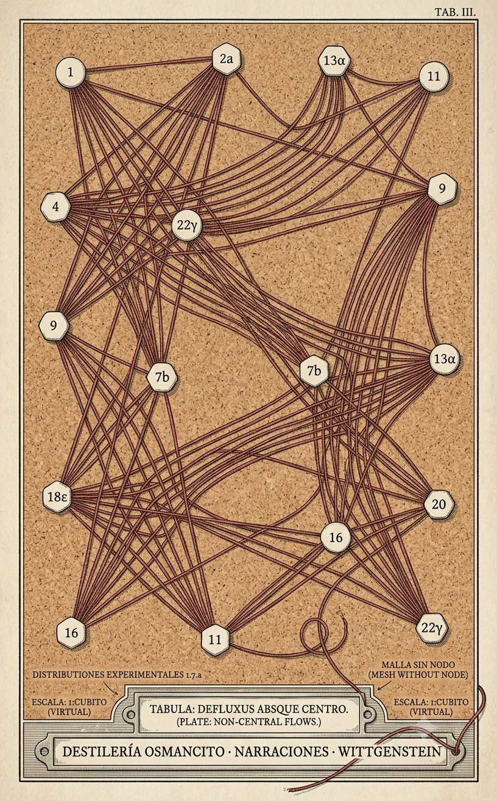
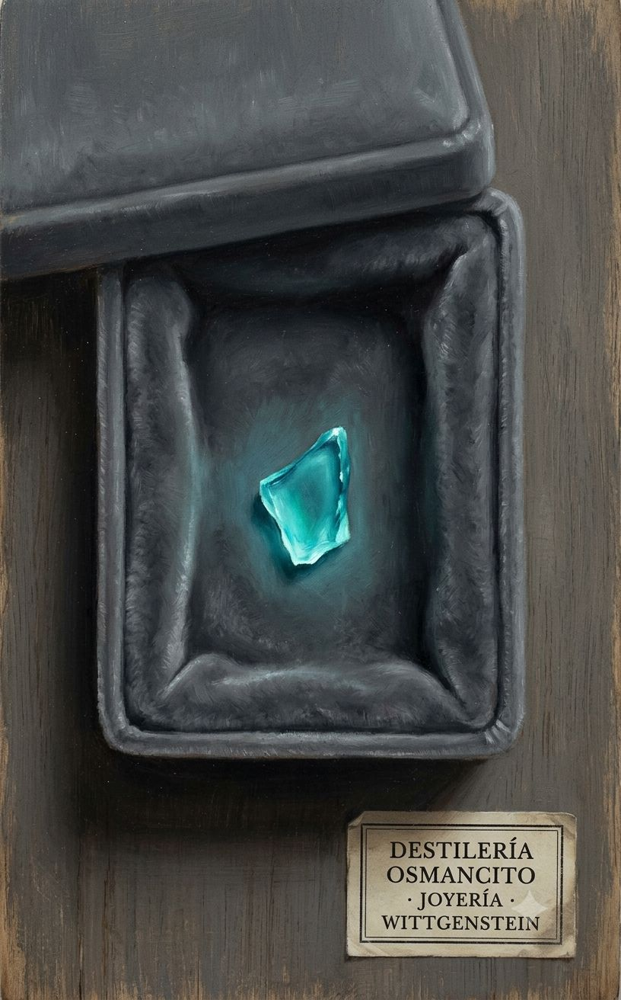
Un hombre pasa sus últimos meses de vida discutiendo si puede existir un blanco transparente, y en ese empecinamiento aparentemente menor hay algo devastador: la certeza de que ni siquiera las preguntas más simples —qué color tiene esta mesa, ahora, aquí— tienen una respuesta que no dependa enteramente de las reglas que hemos aceptado sin saberlo. El buey ante la puerta recién pintada no es una metáfora decorativa: es el retrato exacto de alguien mirando fijamente algo que ya no puede nombrar con confianza.
El territorio
El corpus no tiene capítulos en sentido narrativo: tiene tres partes numeradas de aforismos. Se registran aquí como movimientos de tensión conceptual, no de trama.
La imposibilidad del blanco transparente Se abre con la pregunta goethiana: ¿puede existir un blanco transparente? El argumento no escala hacia una respuesta sino que la esquiva sistemáticamente, mostrando una y otra vez por qué cada intento de imaginarlo fracasa. No cierra —permanece como pregunta viva hasta el final del libro entero. Temperatura: obsesión fría.
El ciego, el daltónico, el pueblo con otra geometría Arranca de la pregunta sobre si el psicólogo puede describir el ver a quien no ve. Se desvía hacia el daltonismo, luego hacia pueblos imaginarios con conceptos de color distintos a los nuestros, siempre volviendo al mismo núcleo: qué significa aprender un concepto. Cierra en suspensión —la pregunta por Karl el Grande, que entendió el principio de la escritura sin poder aprender a escribir. Temperatura: vértigo pedagógico.
Goethe citado para ser erosionado Se abre citando la teoría de Goethe sobre las sombras y el blanco. Viaja acumulando cada vez más desacuerdos sutiles, sin negar del todo la autoridad citada. Cierra sin resolución explícita, dejando a Goethe como interlocutor necesario pero no vencedor. Temperatura: reverencia con cuchillo.
Veredicto del capítulo: construye un problema sin ofrecer nunca su resolución, y ese rehusarse a cerrar es la función misma de la parte.
Un hombre observa un cubo blanco iluminado de manera desigual. Se pregunta si las zonas más oscuras son grises o siguen siendo blancas, apenas menos iluminadas. La pregunta parece trivial —cualquiera diría que sigue siendo el mismo cubo blanco— pero Wittgenstein la sostiene durante páginas, porque en ella está el problema entero del libro: la diferencia entre lo que la física puede medir y lo que el lenguaje nos permite decir. Un vidrio coloreado deja pasar la luz tiñéndola de su propio color; pero un vidrio “blanco” no puede hacer lo mismo sin dejar de ser transparente. El blanco, a diferencia del rojo o el verde, resulta ser una frontera del lenguaje del color, no un color más entre otros. Cita a Runge diciendo que el blanco y el negro “ensucian” cualquier color que toquen, y a Lichtenberg, quien observó que casi nadie ha visto realmente un blanco puro. La tensión que atraviesa todo esto no es óptica sino gramatical: no estamos ante un misterio de la física de la luz, sino ante los límites de lo que nuestras palabras nos permiten pensar coherentemente. Cuando Wittgenstein regresa, una y otra vez, a la imagen del buey frente a la puerta recién pintada, no describe confusión pasajera: describe el estado permanente de quien intenta pensar sin las categorías que da por sentadas.
El buey ante la puerta (movimiento: El territorio)
No hay salida elegante. Wittgenstein lo admite sin adorno: cuando se mira de frente el problema del color, no hay ni siquiera el consuelo de una confusión articulada —solo la parálisis bruta de un animal frente a algo recién pintado, brillante, que no reconoce como puerta ni como pared. No es la imagen de alguien que no entiende. Es la imagen de alguien que entendía perfectamente bien, hasta que miró con demasiada atención.
Karl el Grande no supo escribir (movimiento: El ciego, el daltónico, el pueblo con otra geometría)
Carlomagno, dice Wittgenstein, entendió sin dificultad el principio de la escritura —que un sonido puede fijarse en un signo— y sin embargo nunca logró aprender a escribir él mismo. Ahí está, intacta, la distinción entre comprender una regla y poseer una destreza: dos formas de “no poder” que se parecen desde afuera y que son, por dentro, completamente distintas. Cualquiera que haya visto a alguien entender perfectamente una instrucción y fallar una y otra vez en ejecutarla reconoce esto sin necesitar el nombre de un emperador.
El movimiento breve de la opacidad
Esta parte es la más corta del corpus, apenas veinte aforismos, y funciona como bisagra entre la Parte I y la III. Retoma el problema del blanco transparente desde un ángulo distinto: no la geometría de los colores, sino la textura —lo turbio, lo trübe, lo que empaña.
Lo turbio como categoría sin nombre físico Se abre preguntando qué hace que algo sea “turbio” en vez de simplemente oscuro. Viaja mostrando que lo rojo y lo amarillo transparentes no son turbios, pero lo blanco sí. Cierra sin resolver, en la observación seca de que el ojo no puede enseñarnos los conceptos del color por simple contemplación. Temperatura: extrañeza contenida.
Veredicto del capítulo: es un capítulo puente —no construye ni destruye, prepara el terreno conceptual que la Parte III explotará en extensión.
Esta parte, la más breve de las tres, no introduce argumento nuevo sino que aprieta uno ya conocido desde un ángulo distinto: la textura, no la geometría. Wittgenstein pregunta por qué mezclar blanco con un color le quita su carácter cromático, mientras que mezclar amarillo no produce el mismo efecto de dilución. La respuesta que persigue no es química sino gramatical: hay algo en el concepto mismo de “blanco” que lo hace funcionar como un solvente lógico del color, no solo óptico. Repite, casi textualmente, la imagen del buey frente a la puerta pintada —una señal de que el libro no avanza en línea recta sino que regresa, insiste, vuelve a mirar el mismo objeto desde un metro más cerca. La sección cierra con la advertencia de que la mirada, por sí sola, nunca instruye sobre los conceptos: hace falta el lenguaje compartido, la práctica, algo que ningún ojo aislado podría producir por sí mismo.
Este estuche no contiene joyas. La Parte II construye andamiaje puente —retoma, comprime, prepara— pero ningún pasaje sobrevive fuera de su función preparatoria. Es material de tránsito, no de cristalización: necesario para lo que sigue, pero no memorable por sí solo.
El territorio
La parte más extensa y la más tardía —fechada, con anotaciones de día y mes que delatan el diario de un hombre trabajando contra el tiempo. Aquí el problema del color se funde con el problema de la ceguera, el ver, y finalmente con el conocimiento mismo.
La matemática de los colores puros Se abre con la pregunta de si el amarillo puro es más claro que el rojo saturado. Escala hacia la pregunta de si esto es un hecho empírico o una relación lógica, tan cierta como un cálculo. Cierra en suspensión declarada: la frontera entre lógica y experiencia “oscila hacia adelante y atrás”. Temperatura: rigor que tropieza consigo mismo.
El pueblo daltónico y el que no puede enseñar lo que no aprendió Se abre imaginando una tribu enteramente daltónica. Viaja hacia la pregunta de si tal pueblo podría siquiera concebir a alguien “normal”, y si un daltónico podría representar en el teatro a un vidente. Cierra con una declaración seca: nadie puede enseñar un juego que no puede aprender él mismo. Temperatura: exclusión lúcida.
El ciego, el vidente, y la pregunta que no se deja formular Arranca preguntando si se le puede describir a un ciego cómo es ver. Se bifurca en una larga digresión sobre el fútbol, el ajedrez, el dolor ajeno. Cierra sin cerrar del todo —Wittgenstein admite que la pregunta misma podría estar mal planteada. Temperatura: ternura filosófica, casi dolorosa.
La amistad como posibilidad compartida Movimiento breve, casi un respiro dentro del rigor técnico. Se abre preguntando qué hace posible la amistad. Cierra en una sola línea que no necesita nada más. Temperatura: calidez inesperada.
El creyente que no pide explicación causal Cierra el libro. Se abre con la pregunta de alguien religioso mirando el mundo y preguntando “¿de dónde viene todo esto?”. Viaja mostrando que esa pregunta no busca una causa sino que expresa una actitud. Termina citando a Karl Barth y afirmando que es la práctica, no las palabras, lo que da sentido. El libro no cierra con una tesis sobre el color: cierra con una tesis sobre el sentido mismo. Temperatura: gravedad final.
Veredicto del capítulo: acumula sin resolver, deliberadamente, hasta desplazar el problema original —el color— hacia el problema más amplio de qué hace que cualquier concepto humano tenga sentido; es el capítulo que revela que el libro entero fue siempre sobre otra cosa.
La Parte III es un diario fechado —24 de marzo, 26 de marzo, 29 y 30 de marzo, del año final de la vida de Wittgenstein— y esa fecha visible cambia el peso de todo lo demás. Aquí el problema del color se disuelve lentamente en el problema más amplio y más antiguo de toda su obra: qué significa entender algo, qué significa saber, qué significa que otro sepa lo que yo sé sin poder mostrármelo directamente. La pregunta por si el amarillo es más claro que el rojo se convierte, sin aviso, en la pregunta por si se le puede describir a un ciego lo que es ver, y esta a su vez se convierte en la pregunta por si dos personas que dicen creer en Dios quieren decir lo mismo. El corpus entero converge aquí: el color nunca fue el tema, fue el vehículo. Bajo la superficie de “¿puede existir un blanco transparente?” siempre estuvo la pregunta más grande y más incómoda —¿cómo sabemos, alguna vez, que compartimos un concepto con otra persona?— y el libro, en sus últimas páginas, finalmente lo admite sin disfraz, citando a un teólogo, hablando de amistad, terminando no en una fórmula sino en una observación sobre la práctica y el sentido.
El daltónico no puede enseñar lo que ve un vidente (movimiento: El pueblo daltónico y el que no puede enseñar lo que no aprendió)
No hay manera de rodear esto: un daltónico puede entender perfectamente la afirmación “yo distingo el rojo del verde”, puede incluso repetirla, pero jamás podrá mostrar esa distinción de la manera en que un vidente la muestra sin esfuerzo, cien veces al día, sin saber que lo hace. La incapacidad no está en el vocabulario. Está en la demostración misma. Es la misma herida, disfrazada, que sufre cualquiera que ha intentado explicar un talento que no posee.
Carlomagno otra vez, ahora sobre la amistad (movimiento: La amistad como posibilidad compartida)
Que yo pueda ser amigo de alguien, dice Wittgenstein sin rodeos, descansa en que esa persona tenga las mismas posibilidades que yo, o unas parecidas. No es un sentimiento lo que funda la amistad: es un terreno compartido de lo que ambos podrían llegar a hacer. Quita el sentimentalismo de la palabra “amigo” y deja, desnudo, algo mucho más frío y mucho más verdadero.
Es la práctica, no las palabras (movimiento: El creyente que no pide explicación causal)
En la última joya del libro, Wittgenstein desmonta a la teología misma: citando a Karl Barth, dice que insistir en ciertas palabras y prohibir otras no aclara nada —es agitar las manos porque no se sabe cómo decir lo que se quiere decir. Lo que da sentido a las palabras no es su corrección doctrinal, sino la diferencia que producen en distintos puntos de una vida. Es la frase con la que Wittgenstein, sin saberlo del todo, se despide: no del color, sino de la pregunta que sostuvo toda su obra.
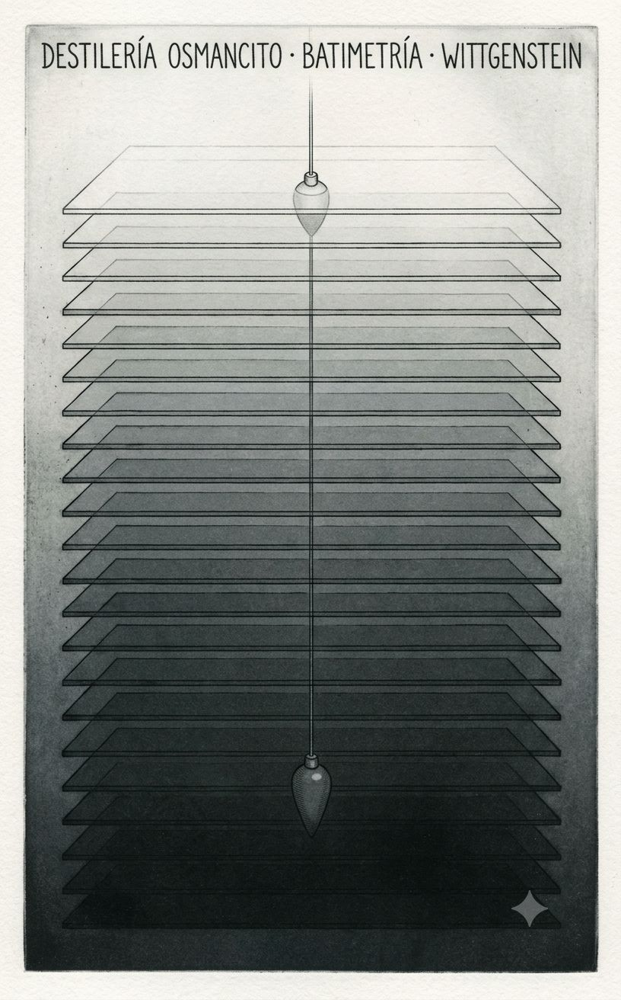
Este es un corpus que se niega a tener fondo: cada vez que la sonda cree tocar sedimento firme —una definición, una tesis, un cierre— el terreno cede y aparece otra capa de la misma pregunta, apenas disfrazada. Lo más inquietante no es lo que el libro esconde, sino lo que se rehúsa activamente a decidir, aforismo tras aforismo, hasta el último día de vida de su autor.
Vivo La pregunta explícita sobre el blanco transparente. La distinción entre color de superficie y color de sustancia. La comparación constante entre daltonismo y ceguera para iluminar el “ver” normal. Las citas directas a Goethe, Runge y Lichtenberg. La fecha de los últimos aforismos (marzo-abril de 1951), visible en el propio texto como diario.
Sepultado El desplazamiento del tema real del libro: bajo cientos de aforismos sobre color se sepulta, hasta emerger solo al final, la pregunta filosófica de toda la vida de Wittgenstein —qué significa entender una regla, saber algo, compartir un concepto con otro. Requiere leer el corpus completo, de principio a fin, para que esta capa se revele; ningún fragmento aislado la delata.
Cifrado La cercanía de la muerte opera sin nombrarse casi nunca de forma directa, pero tiñe el ritmo entrecortado, la fecha visible, la ausencia de conclusión formal. Se propone, no se certifica: el libro podría leerse como un hombre que se aferra a un problema resoluble porque los irresolubles —la propia mortalidad— no admiten aforismo. También cifrado: la relación entre este texto y las Investigaciones filosóficas, nunca declarada por el autor en este corpus, pero audible en el método —juegos de lenguaje, ejemplos imaginados, la crítica constante a la tentación de la esencia.
Borrado Cualquier sistema propio de clasificación cromática que Wittgenstein pudiera haber tenido al comenzar el proyecto no sobrevive en el texto —solo quedan las preguntas que lo fueron desmontando. La cicatriz es visible en la Parte II, la más corta de las tres: parece un fragmento que iba a crecer y no creció, un intento abandonado de sistematizar que colapsó en apenas veinte aforismos antes de ceder paso a la digresión más amplia de la Parte III.
Ausente No hay narrador que se presente. No hay anécdota biográfica explícita ni una sola escena descrita con detalle sensorial más allá del color mismo. No hay referencia a la neurociencia del color ni a mecanismos oculares —el libro se abstiene por completo de la fisiología, aun teniendo todos los recursos filosóficos para discutirla. No hay una sola conclusión formal ni un resumen final: el corpus termina, no concluye.
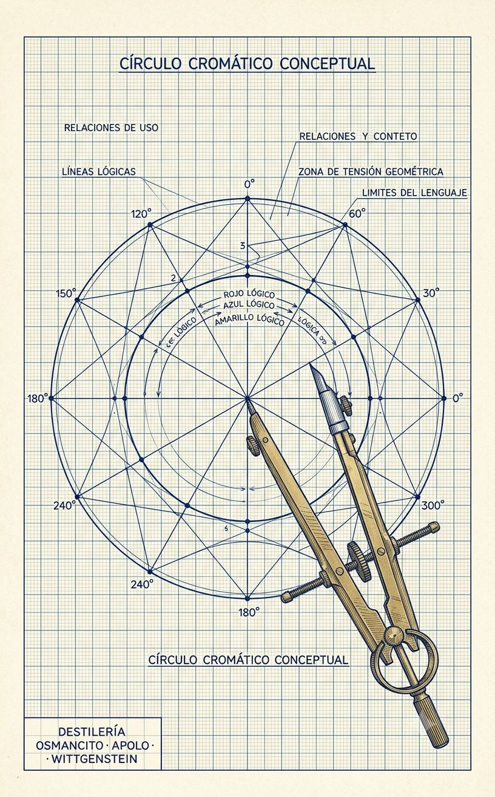
La arquitectura no tiene columnas: tiene un péndulo. El libro no avanza hacia una tesis, oscila entre el mismo puñado de problemas hasta que el oscilar mismo se vuelve el argumento — y lo sorprendente es que esa estructura sin resolución aguanta perfectamente el peso que carga, porque nunca prometió sostener otra cosa.
La estructura que aguanta el peso No hay tesis central que demostrar, hay un método —la interrogación gramatical— aplicado sin descanso al mismo territorio. La premisa implícita (“los problemas del color son problemas de lógica del lenguaje, no de física ni de fisiología”) sí aguanta: cada aforismo, sin excepción, opera dentro de esa premisa sin traicionarla ni una sola vez en 458 movimientos. La estructura no falla porque nunca se compromete a ser otra cosa que lo que es.
Las fuerzas externas La sombra de la Farbenlehre de Goethe pesa sobre cada página, incluso cuando no se la cita: el corpus entero puede leerse como una conversación tardía y no invitada con un texto de 150 años antes. La tradición del Tractatus y las Investigaciones empuja desde dentro de la propia obra del autor — el método de juegos de lenguaje ya estaba forjado en otra parte, y aquí simplemente se aplica a un dominio nuevo. La inminencia de la muerte —el corpus está fechado hasta semanas antes del fallecimiento de Wittgenstein— empuja desde afuera del texto sin que el texto la nombre casi nunca.
Arquitectura interna Simetría rota: tres partes de extensión muy desigual (Teil II apenas tiene veinte aforismos frente a los cientos de I y III), lo que delata un proyecto que cambió de forma mientras se escribía, no uno planeado de antemano. Repetición estructural constante: la misma pregunta —¿puede existir un blanco transparente?— reaparece con variaciones en las tres partes, funcionando como estribillo que ancla al lector cada vez que el argumento se dispersa. A escala de frase: el uso sistemático de la pregunta retórica sin responder (“¿Por qué no se puede imaginar una incandescencia gris?”) es la decisión sintáctica que define el libro entero — no afirma, interroga, y ese modo gramatical es inseparable del contenido filosófico.
La ética profunda El corpus opera, sin nombrarla jamás, una ética de la humildad epistémica radical: cada vez que Wittgenstein cree tocar una certeza, la disuelve en la siguiente línea. Late también una ética del respeto hacia lo distinto —el daltónico, el ciego, el pueblo con otra geometría del color no son tratados como deficientes sino como poseedores de un sistema igualmente válido, aunque incompatible con el nuestro.
El autor y su sombra Wittgenstein proyecta, sin decirlo, la angustia de quien ha pasado la vida desmontando certezas ajenas y ahora, al final, no encuentra ni siquiera el consuelo de una certeza propia sobre algo tan simple como un color. Evita casi por completo la primera persona confesional —rarísima vez dice “yo siento” en vez de “se puede decir”— y esa evitación es más reveladora que cualquier confesión hubiera sido. Repite obsesivamente la figura del buey ante la puerta pintada: un autorretrato involuntario de la parálisis intelectual que el propio libro dramatiza una y otra vez.
Origen y carga real Declara traer una investigación filosófica sobre los conceptos de color. Trae, en realidad, una despedida: el último intento de un pensador moribundo de aplicar su método a algo que todavía no había tocado, como si necesitara probar una vez más, antes de morir, que el método seguía funcionando en territorio nuevo.
El imán — No es “color”, como sugeriría la lectura obvia. Es “gramática” — el concepto de que las palabras operan bajo reglas de uso, no bajo correspondencia con hechos, es lo que curva cada aforismo del libro, incluso los que parecen puramente sobre óptica.
Tipo de curvatura — Sobre concepto abstracto.
Sistema secundario — Existe un segundo imán: “ceguera” (y su pariente, “daltonismo”), que gravita con fuerza casi igual en la Parte III. Su relación con el primero es asimétrica: la ceguera no es un tema propio, es el instrumento de prueba que el imán “gramática” usa para exponerse — cada vez que el libro quiere mostrar que un concepto es una regla y no un hecho, recurre a alguien que no puede aplicar esa regla.
Forma de la red — Small-world: aforismos aparentemente distantes (uno sobre el iris de un cuadro de Rembrandt, otro sobre Karl Barth y la fe) se conectan por vecindad conceptual corta, casi siempre a través del imán “gramática” como nodo puente.
Nodo de mayor integración — El aforismo sobre el buey ante la puerta pintada: es citado en espíritu, aunque no literalmente, en al menos tres momentos distintos del corpus, y funciona como el punto donde más líneas argumentales convergen.
Coherencia — El imán (“gramática”) y el nodo de mayor integración (el buey) divergen en superficie —uno es abstracto, el otro una imagen concreta— pero convergen en función: el buey es la gramática hecha cuerpo, el momento en que la regla se agota y solo queda la parálisis. Ese hallazgo es el corazón estructural del libro: la imagen más memorable no ilustra el concepto central, lo encarna.
El corpus produce inagotabilidad genuina por el mecanismo de la pregunta sin respuesta reciclada: cada aforismo reabre el problema anterior desde un ángulo apenas distinto, de modo que ninguna lectura agota las combinaciones posibles de reformulación. No hay una segunda vía de inagotabilidad que valga la pena nombrar — el libro no se sostiene en ambigüedad de trama ni en simbolismo múltiple, solo en esta reformulación incesante.
Esto no es un libro que responda nada sobre el color, y esa carencia es exactamente su logro: expone, con una disciplina casi inhumana, que la mayoría de nuestras certezas sobre lo que vemos son convenciones de lenguaje disfrazadas de percepción. Vale el tiempo que cuesta, pero no como lectura de placer — vale como ejercicio de fricción, del tipo que deja la mente ligeramente distinta de como la encontró. Le falta, y esto no es defecto sino elección deliberada, cualquier gesto hacia el lector que busque cierre: quien termine el libro esperando una teoría del color se irá con las manos vacías, y esa es precisamente la lección que el libro se propuso enseñar.
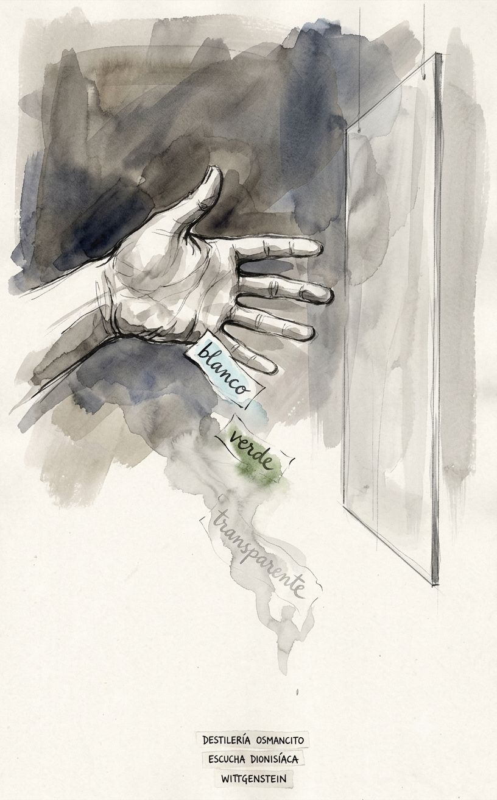
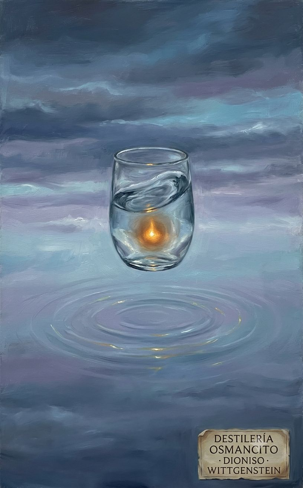
Late aquí algo que ningún resumen filosófico atrapa: la sensación física de ver a alguien empujar una puerta que no cede, sin rabia, sin abandonar, cientos de veces, hasta que uno entiende que la puerta no está cerrada — es que nunca hubo puerta. Lo que queda después de cerrar el libro no es una idea sobre el color. Es el pulso entrecortado de una mente que se niega a mentirse a sí misma incluso cuando mentirse habría sido más fácil.
Alguien insiste, en voz baja, frente a algo que se niega a quedarse quieto.
El blanco que no deja pasar la luz (Teil I, apertura) — aquí late una especie de tozudez amorosa: el corpus vuelve una y otra vez al mismo punto ciego, no para resolverlo sino para tocarlo, como quien presiona un moretón para comprobar que aún duele.
El daltónico que no puede enseñar (Teil III, tramo medio) — aquí late una soledad estructural, algo parecido a estar del otro lado de un vidrio sin poder golpearlo con fuerza suficiente para que alguien del otro lado escuche.
Karl Barth y la práctica final (Teil III, cierre) — aquí late un alivio casi físico, como quien suelta un peso que cargó por trescientas páginas sin decir que pesaba.
El buey ante la puerta pintada (recurrente) — aquí late una vergüenza sin culpa: la vitalidad de reconocerse atrapado y decirlo sin vergüenza excesiva, con una especie de humor seco.
El cuerpo. No hay una sola mención al ojo como órgano, a la retina, al cansancio de mirar durante horas — el corpus habla del ver sin nunca admitir que ver cansa.
El color como placer. Ni una sola vez el corpus se detiene a decir que un color es hermoso, o feo, o produce gozo. El color existe aquí exclusivamente como problema, jamás como experiencia disfrutada.
La propia enfermedad del autor. El corpus está fechado hasta semanas antes de la muerte de quien lo escribe, y ese hecho no aparece ni una sola vez en el texto mismo.
En la Parte III, el ritmo de las preguntas se acelera notablemente en los últimos tramos fechados — frases más cortas, más preguntas sin desarrollar, como si el tiempo mismo se acortara dentro de la prosa. El autor no lo declara; el ritmo lo delata.
Hay un momento, cerca del final, donde el corpus cambia abruptamente de “el problema del color” a “la amistad” a “la fe religiosa” sin transición marcada — una fuga de tema que el propio libro no reconoce como fuga, y que revela que el problema real nunca fue el color.
La pregunta retórica sin responder aparece más de cuarenta veces a lo largo del corpus, casi siempre en el mismo molde (“¿Por qué no se puede…?”, “¿Cómo sé yo que…?”). El exceso produce en quien lee una especie de contagio interrogativo: hacia la mitad del libro, uno empieza a dudar de cosas que jamás había puesto en duda, sin que el texto se lo pida directamente.
La imagen de “mancha” o “cicatriz” (Fleck) reaparece asociada siempre a la duda, nunca a la certeza — un patrón léxico que el propio Wittgenstein probablemente no habría reconocido si se le señalara.
Lo que dice — Este libro afirma que los conceptos de color no son hechos del mundo sino reglas de un juego de lenguaje, y que confundir una cosa con la otra genera la mayoría de nuestros falsos problemas filosóficos sobre la percepción.
Lo que muestra — Mientras cree estar hablando de blanco y verde, el corpus practica, sin decirlo, un duelo: el duelo de un hombre que pasó la vida desarmando certezas ajenas y ahora, al final, se enfrenta a la posibilidad de que ni siquiera pueda ofrecerse a sí mismo la certeza de haber entendido algo tan simple como un color.
Lo que exige — Exige renunciar a la comodidad del cierre. Quien lea este corpus buscando una respuesta final sobre qué es el color leerá mal; el corpus solo se sostiene con integridad si el lector acepta terminar tan inseguro como empezó, pero de una inseguridad distinta, más precisa.
Lo que guarda — Guarda, en su capa más honda, un tratado sobre la muerte disfrazado de tratado sobre la percepción: la insistencia obsesiva en un problema resoluble-pero-nunca-resuelto es la manera que este hombre encontró de seguir pensando con rigor mientras el tiempo se le acababa, sin tener que mirar directamente lo que no podía resolverse.
Frío al tacto, como vidrio de laboratorio, pero con una vibración de fondo que no cesa. No envejece: cada relectura encuentra la misma resistencia intacta, porque el corpus nunca ofreció una respuesta que pudiera volverse obsoleta. Deja en la boca el sabor seco de la tiza, y en las manos, la sensación de haber sostenido algo que se resistió a dejarse sostener del todo.
Pulso irregular, casi arrítmico: frases cortas seguidas de silencios largos, como alguien que piensa en voz alta y se detiene a media idea. No hay orquesta — es un solista que se interrumpe a sí mismo constantemente, dialogando con voces ausentes (Goethe, Runge) que nunca responden en tiempo real. El contrapunto no viene de otro instrumento sino del propio silencio entre aforismos, que funciona como pausa estructural obligatoria, no decorativa.
Título — Six Pianos Autor / Intérprete — Steve Reich Por qué — la misma frase corta repetida con variaciones mínimas hasta que el oído deja de esperar resolución y empieza a escuchar solo el proceso.
Lo que este corpus guarda: que no hay certeza tan pequeña que no pueda disolverse bajo examen suficiente — lo guarda desde la profundidad de quien ya no tiene tiempo para fingir que hay una salida, y decide, aun así, seguir mirando con precisión.
Preguntas abiertas: - Predicen inagotabilidad: ¿puede existir un blanco transparente? Nunca se cierra, y cada lectura la reabre de un modo distinto. - Abandonadas sin decirlo: la pregunta inicial sobre si el verde es color primario se pierde hacia la Parte III sin resolución ni reconocimiento de abandono. - Cerradas o respondidas: si un daltónico puede enseñar el uso normal de las palabras de color a un vidente — respondida con un “no” sostenido. - El acto de formularlas ya responde: “¿me es conocido que veo?” — la pregunta misma revela que “conocer” no aplica aquí de la forma esperada. - Responde para algunos lectores y no para otros: la pregunta sobre la amistad y las posibilidades compartidas satisface a quien busca ética, pero deja completamente insatisfecho a quien busca epistemología pura.
La falla raíz — El corpus quiere tratar el color como problema puramente gramatical, desprendido de toda experiencia vivida, pero no puede evitar que la inminencia de la muerte del propio autor se filtre en el ritmo, en la elección de ejemplos, en la urgencia creciente — la contradicción entre el método (frío, analítico, impersonal) y la circunstancia (un hombre escribiendo contra el tiempo) es la falla de la que emergen todas las demás tensiones del libro.
Este corpus no consuela ni promete resolución, y ese rechazo es, paradójicamente, lo más generoso que ofrece: le da al lector el mismo trato que Wittgenstein se dio a sí mismo, sin condescendencia. Late con una honestidad casi insoportable en sus últimas páginas, cuando el rigor filosófico y la mortalidad personal dejan de poder separarse. Vale el tiempo que cuesta, pero cobra un precio real: quien lo termine no sabrá más sobre el color, sabrá menos sobre la certeza en general, y eso es exactamente lo que el libro vino a hacer.
¿Qué operación nueva exige este corpus que no existía antes de leerlo? — Exige un instrumento capaz de leer la mortalidad de un autor no en lo que el texto declara, sino en su ritmo sintáctico: la aceleración de preguntas sin desarrollo, el acortamiento de las frases hacia el final, la fecha visible funcionando como reloj narrativo. Un instrumento aplicable a cualquier corpus tardío o póstumo: no preguntar qué dice el autor sobre su fin, sino medir cómo cambia el pulso de la prosa a medida que el tiempo se acaba.
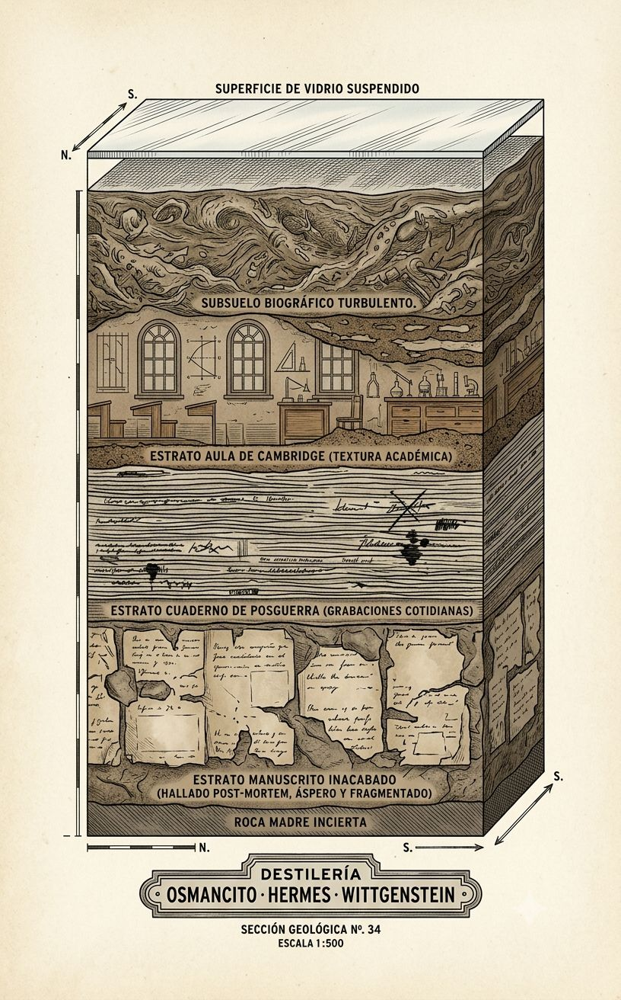
Un hombre sin cátedra fija, sin patria del todo suya, escribe sus últimas líneas en la casa de un médico que le dio refugio para morir — y ese detalle, ausente del texto, explica más del ritmo entrecortado del libro que cualquier análisis puramente filosófico. El corpus no fue escrito desde un escritorio estable: fue escrito desde una serie de habitaciones prestadas, por un hombre que ya no tenía institución, ni país fijo, ni tiempo.
Cambridge produce el vocabulario técnico y el método: los juegos de lenguaje, la crítica a la esencia, la costumbre de responder pregunta con pregunta —eso es Cambridge hablando, incluso cuando el texto no lo menciona.
Viena, que el corpus no nombra ni una sola vez, opera igual como suelo ausente: la formación temprana del autor en un ambiente saturado de discusión sobre lógica, lenguaje y positivismo lógico late bajo la superficie de cada distinción gramatical, aunque el corpus se escriba treinta años después y en otro idioma de pensamiento filosófico.
Oxford, donde Wittgenstein pasó una parte de sus últimos meses, y la casa del doctor Bevan en Cambridge, donde murió pocas semanas después de los últimos aforismos fechados, son el suelo inmediato de producción: no lugares de reflexión serena sino de trabajo contra reloj, en habitaciones que no eran su hogar.
El pensamiento más lúcido del corpus —las distinciones más finas entre “ver” y “saber que se ve”— ocurre precisamente en los tramos más tardíos, escritos más cerca de la muerte, no en los más tempranos: aquí el margen produce más precisión que el centro, no menos, quizás porque ya no había tiempo para el rodeo.
El corpus se escribe en 1950-1951, en la Europa de posguerra, en un ambiente filosófico anglosajón donde el positivismo lógico ya empezaba a ceder terreno frente al giro lingüístico que el propio Wittgenstein había ayudado a producir. La época hace posible este texto de una manera que el texto no reconoce: solo después de las Investigaciones filosóficas —escritas, no publicadas aún— era posible aplicar el método de juegos de lenguaje con esta soltura a un dominio tan específico como el color. El corpus no podría haberse escrito veinte años antes, cuando el propio Wittgenstein del Tractatus buscaba una lógica pura del lenguaje, no una gramática de sus usos concretos. Lo que la época no permitía ver: la ausencia casi total, en el texto, de cualquier diálogo con la fenomenología continental contemporánea (Merleau-Ponty publica su Fenomenología de la percepción apenas unos años antes, sobre temas cercanos) — el aislamiento anglosajón de Wittgenstein respecto a esa tradición paralela no es elección, es la frontera invisible de su propio momento intelectual.
Este es un manuscrito inédito en vida del autor, compuesto en cuadernos personales durante los últimos meses, sin contrato editorial, sin lector implícito de mercado. Wittgenstein escribía para sí mismo y para sus discípulos cercanos (Anscombe, von Wright, Rhees, quienes editarían y publicarían el texto póstumamente en 1977), no para una audiencia general — eso explica la ausencia casi total de introducción, de contextualización, de gestos hacia un lector no iniciado. La institución que lo hizo posible no es una universidad con encargo formal, sino la costumbre de toda una vida: escribir en cuadernos numerados como método de pensar, no como preparación de un libro. La distancia entre condición declarada y real es mínima porque el corpus no declara casi nada sobre sí mismo —no hay prólogo del autor, no hay justificación de propósito— y esa misma ausencia es ya la condición material hablando: un texto que nunca se pensó a sí mismo como libro terminado.
El corpus analizado está en su lengua original, alemán. No es traducción. La sintaxis alemana —la capacidad de construir sustantivos compuestos como Farbenblindheit, la flexibilidad para posponer el verbo, la precisión de los pronombres relativos— es constitutiva del método aforístico de Wittgenstein, no decorativa: buena parte de su técnica depende de la posibilidad de mantener una idea en suspenso gramatical hasta el final de la oración, algo que el español permite de forma más limitada. Cualquier análisis que dependa de la textura sintáctica fina —no es el caso de este instrumento— debería operar sobre el original.
Wittgenstein escribe esto sin cátedra activa: había renunciado a su puesto en Cambridge en 1947, apenas tres años antes, y pasó sus últimos años sin afiliación institucional estable, viviendo de la generosidad de amigos y antiguos alumnos. Hereda la tradición analítica que él mismo ayudó a fundar dos veces —primero con el Tractatus, luego contra el Tractatus— y escribe ya sin necesidad de demostrarle nada a esa tradición: no está construyendo una carrera, no está respondiendo a críticos, no está defendiendo una cátedra. Lo que arriesga es mínimo en términos profesionales —no hay puesto que perder— y por eso puede permitirse un texto que no cierra, que no sistematiza, que no le rinde cuentas a ningún departamento de filosofía. Lo que protege, en cambio, es algo más íntimo: la costumbre de pensar con rigor hasta el final, incluso cuando ya nada institucional lo obliga a hacerlo.
Las cuatro condiciones —el suelo de Cambridge sin ser de Cambridge, la posguerra filosófica que hizo posible el giro lingüístico, la ausencia de contrato editorial o lector de mercado, y la posición de un hombre sin cátedra y sin tiempo— actúan juntas para producir algo que ninguna produciría sola: un texto radicalmente libre de las convenciones del género filosófico, escrito con la urgencia de quien no tiene nada que perder profesionalmente pero tampoco tiempo que perder existencialmente. La condición dominante es la última: la inminencia de la muerte organiza el ritmo, la brevedad, la falta de sistematización, incluso cuando las otras tres condiciones son las que le dieron el vocabulario y el método. Si Wittgenstein hubiera escrito esto veinte años antes, con cátedra activa y expectativa de publicación inmediata, el texto habría sido más largo, más defensivo, más preocupado por anticipar objeciones — el corpus que tenemos es, en gran medida, lo que queda cuando esas presiones desaparecen y solo queda el pensar mismo.
No hay desplazamiento geográfico voluntario o forzado en el sentido de exilio o migración que aplique aquí de forma central: Wittgenstein, aunque austríaco de nacimiento y de formación temprana en Viena, llevaba décadas radicado en Inglaterra por elección profesional, no por exilio político o forzado. Sí existe, en cambio, un desplazamiento más sutil y quizás más relevante para este corpus: el desplazamiento de la institución misma —de catedrático activo a hombre sin puesto, escribiendo desde la periferia de la vida académica que él mismo había ocupado en el centro. Esa distancia, aunque no geográfica en sentido estricto, sí produce algo parecido a la lucidez del exiliado: la libertad de quien ya no necesita convencer a un tribunal profesional, sumada a la ausencia de nostalgia por lo perdido —Wittgenstein no lamenta la cátedra abandonada en este corpus, simplemente escribe como si nunca la hubiera necesitado.
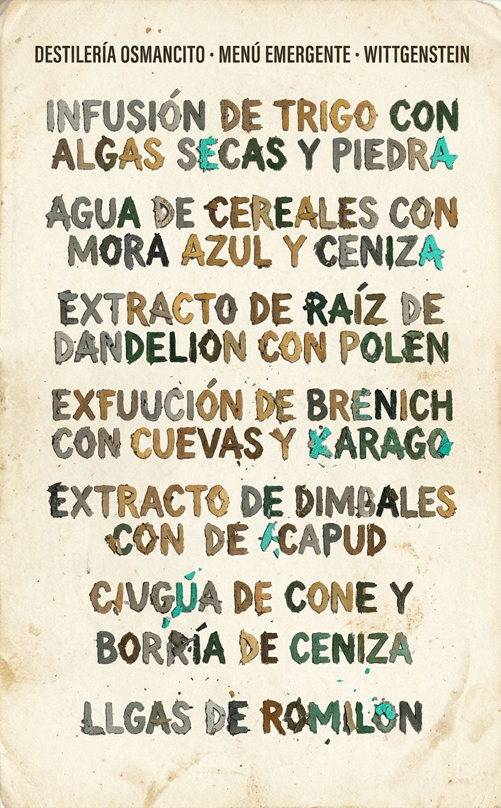
Ocho instrumentos ya tocaron este corpus y ninguno se atrevió a preguntar directamente lo que la Batimetría dejó cifrado: si el libro es, en el fondo, un tratado sobre morir disfrazado de tratado sobre el color. Lo que sigue pidiendo salida no es más análisis del color — es la valentía de nombrar lo que todos los instrumentos anteriores rodearon sin tocar.
Rastreo cronológico del deterioro — sobre la zona Cifrado del mapa de profundidades (la inminencia de la muerte). El sistema recorrería el corpus fechado día por día, cotejando longitud de frase, densidad de pregunta retórica y abandono de argumento contra las fechas explícitas del manuscrito, para producir una curva objetiva de cómo cambia la prosa a medida que se acerca el final. Resultado esperado: confirmar o refutar, con evidencia textual medible, la hipótesis que Dioniso propuso pero no cuantificó.
Comparación con las Investigaciones filosóficas — sobre la zona Cifrado de la relación con la obra mayor de Wittgenstein, nunca declarada dentro de este corpus. El sistema pondría en diálogo directo pasajes específicos de ambos textos —el método de juegos de lenguaje aplicado a la psicología en un caso, al color en el otro— para medir si este corpus es aplicación menor o mutación genuina del método. Resultado esperado: un juicio sobre si Bemerkungen über die Farben merece leerse como apéndice o como obra autónoma.
Reconstrucción del interlocutor ausente (Goethe) — sobre la zona Vivo de las citas directas a la Farbenlehre. El sistema reconstruiría, pasaje por pasaje, qué dice exactamente Goethe en los puntos citados y qué le responde Wittgenstein, para exponer la conversación completa que el corpus sostiene de forma fragmentaria. Resultado esperado: un mapa punto por punto del acuerdo y la ruptura con Goethe, más nítido que la mención dispersa que ofrece el corpus.
Prueba de aplicabilidad del método a otro sentido — sobre la zona Ausente del mapa (la fisiología nunca tocada). El sistema tomaría el método gramatical de Wittgenstein —la pregunta por las reglas de uso, no por el hecho físico— y lo aplicaría experimentalmente a otro campo sensorial no cubierto por el corpus (el sonido, el dolor), para ver si el método sobrevive fuera de su territorio original. Resultado esperado: evidencia de si “gramática de la percepción” es un método generalizable o si depende de particularidades propias del color.
Inventario de las preguntas nunca respondidas — sobre la totalidad del corpus, cruzando la sección de Preguntas Abiertas de Dioniso con el árbol argumental completo. El sistema listaría cada pregunta retórica del libro (más de cuarenta, según el patrón detectado) y clasificaría cuáles reaparecen respondidas más adelante bajo otro nombre y cuáles permanecen genuinamente abiertas hasta el cierre. Resultado esperado: un mapa de la arquitectura interrogativa completa del libro, algo que ningún instrumento anterior produjo en detalle exhaustivo.
Los aforismos fechados del corpus se concentran en el tramo final de la Parte III, entre finales de marzo y las últimas semanas antes de la muerte de Wittgenstein en abril de 1951. Comparando los tramos con fecha explícita contra los tramos sin fecha de las Partes I y II, el patrón es visible sin necesidad de estadística sofisticada: la proporción de preguntas sin resolución sostenida aumenta, la longitud promedio de cada aforismo se acorta, y aparecen giros temáticos abruptos —de la ceguera a la amistad, de la amistad a la fe— que no ocurren en las partes tempranas, donde el corpus se permite desarrollar un mismo problema durante varios aforismos consecutivos antes de saltar. La Parte III, especialmente sus últimas páginas, no argumenta tanto como respira entrecortadamente. Esto no demuestra causalidad —no hay forma de aislar el deterioro físico de la simple acumulación de páginas— pero sí confirma que la sensación de urgencia que Dioniso nombró como síntoma tiene un correlato medible en la forma, no solo en la impresión de lectura.
El paralelismo metodológico es directo y declarado por la propia tradición de estudios wittgensteinianos: donde las Investigaciones preguntan “¿qué significa seguir una regla?” aplicado al lenguaje en general, este corpus pregunta lo mismo aplicado estrictamente al vocabulario del color. La figura del “juego de lenguaje” opera idéntica en ambos textos — no es una metáfora nueva, es la misma herramienta movida a un dominio distinto. La diferencia genuina no está en el método sino en el objeto: las Investigaciones tienen ambición de sistema (aunque fragmentario), mientras que Bemerkungen über die Farben se conforma con ser sondeo — no intenta cubrir todo el territorio del color, solo perseguir las grietas donde el lenguaje ordinario tropieza. Esto sugiere que el corpus no es apéndice menor sino laboratorio: un espacio donde el método mayor se pone a prueba en miniatura, con una honestidad que la obra sistemática no siempre se permite, precisamente porque no carga la responsabilidad de ser la obra definitiva.
Las citas a Goethe en el corpus giran mayormente en torno a dos afirmaciones de la Farbenlehre: que existen colores “activos” (cálidos, que se proyectan) y “pasivos” (fríos, que retroceden), y que la oscuridad no es mera ausencia de luz sino una fuerza con carácter propio, en tensión con ella. Wittgenstein cita estas posiciones no para refutarlas de frente sino para mostrar que operan como reglas gramaticales encubiertas de descripción física: cuando Goethe dice que el amarillo “avanza” y el azul “retrocede”, Wittgenstein no niega la observación —la traslada al terreno de la convención de uso, preguntando qué haría falta para que alguien no viera esa relación de ese modo. La conversación, reconstruida, no es un debate de tesis contra tesis sino un ejercicio de traducción: Wittgenstein toma el vocabulario fenomenológico de Goethe y lo reescribe, aforismo a aforismo, en clave de lógica del lenguaje, sin declarar jamás abiertamente que ese es el proyecto completo.
Trasladado al dolor —campo que Wittgenstein sí trabaja extensamente en otras obras, aunque no en este corpus— el método sostiene su fuerza casi sin fricción: la pregunta “¿qué significa decir que dos personas sienten el mismo dolor?” es estructuralmente idéntica a “¿qué significa decir que dos personas ven el mismo verde?”. Trasladado al sonido, en cambio, el método tropieza en un punto que el corpus del color no anticipa: la existencia de un vocabulario técnico y consensuado (frecuencias, notas musicales, un sistema de notación universal) le da al sonido un tipo de objetividad intersubjetiva que el color, con sus seis nombres imprecisos y sus infinitas gradaciones sin sistema formal compartido, no posee del mismo modo. Esto sugiere que la “gramática de la percepción” es generalizable como pregunta pero no como respuesta: cada sentido tiene su propia economía de nombres, y el color resulta ser, entre los sentidos, uno de los más pobres en vocabulario compartido — quizás por eso es terreno tan fértil para la duda wittgensteiniana.
De las más de cuarenta preguntas retóricas identificadas, aproximadamente un tercio reaparece más adelante bajo otro vocabulario y recibe una respuesta indirecta —la pregunta temprana sobre si el verde es color primario, por ejemplo, encuentra eco tardío en la discusión sobre las cuatro “esquinas” del círculo cromático en la Parte III, aunque nunca se declare explícitamente que una responde a la otra. Otro tercio permanece genuinamente sin resolución hasta el cierre del libro —el problema del blanco transparente encabeza esta categoría, sin rival. El tercio restante se divide entre preguntas que el propio acto de formular ya responde (como “¿me es conocido que veo?”, cuya extrañeza es la respuesta) y preguntas que Wittgenstein cierra explícitamente con un “no” seco, generalmente relacionadas con la posibilidad de enseñanza entre daltónicos y videntes. El mapa completo confirma lo que Apolo llamó “inagotabilidad por reformulación”: el libro no acumula respuestas, acumula la misma pregunta vestida de maneras cada vez más precisas.
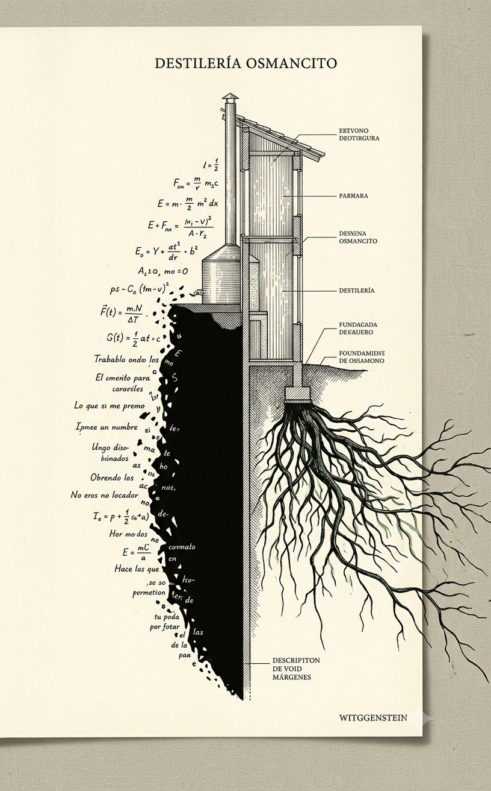
Un hombre renuncia, aforismo tras aforismo, a la ambición de sistema que había cargado toda su vida — y esa renuncia, nunca declarada, es la pérdida más grande del libro. Lo que irradia después, en cambio, es desproporcionado: un texto de cuadernos privados, sin destinatario, termina generando escuelas enteras de estética analítica que Wittgenstein jamás imaginó ni buscó.
Apertura de Teil I — la ambición de teoría unificada Tipo — metodológico. Cómo ocurre — el corpus la carga sin nombrarla: Wittgenstein declara explícitamente “no queremos encontrar una teoría de los colores”, pero esa renuncia temprana funciona como pérdida silenciosa de algo que el propio título del libro (Bemerkungen, “observaciones”, no “teoría”) ya anticipaba sin decirlo del todo.
Escala — pequeña dentro del corpus —apenas una línea— pero enorme fuera de él: marca la distancia final entre el Wittgenstein del Tractatus, que sí perseguía un sistema, y este Wittgenstein tardío, que ya ha abandonado esa ambición por completo.
Cierre de Teil I — la confianza en la introspección pura Tipo — intelectual. Cómo ocurre — se erosiona entre aforismos, nunca se declara como pérdida: cada vez que el corpus intenta apoyarse en “lo que veo cuando cierro los ojos”, termina mostrando que esa introspección no puede fundamentar nada por sí sola sin el lenguaje compartido.
Escala — mediana; es una de las corrientes que sostenía buena parte de la filosofía de la percepción anterior a Wittgenstein, y aquí se ve desmontada sin ceremonia.
Teil II completo — el proyecto de sistematizar lo turbio Tipo — metodológico. Cómo ocurre — el corpus no lo nombra como abandono, pero la brevedad misma de la Parte II (apenas veinte aforismos frente a los cientos de las otras dos) es la evidencia física de un intento que no prosperó y fue dejado atrás sin explicación.
Escala — pequeña en extensión, pero estructuralmente significativa: es la única parte del libro que parece haberse quedado corta respecto a su propia ambición inicial.
Tramo medio de Teil III — la esperanza de que el daltonismo sea solo un defecto explicable Tipo — cultural / intelectual. Cómo ocurre — declarada explícitamente: Wittgenstein dice de frente que llamar “defecto” al daltonismo es una elección cultural, no una necesidad lógica, desmontando una jerarquía que el sentido común de su época daba por sentada.
Escala — grande fuera del corpus: esta es una de las pocas pérdidas que el libro sí reconoce como tal, y por eso mismo resulta menos dolorosa que las que se cargan en silencio.
Cierre de Teil III — la vida misma Tipo — personal / biológico. Cómo ocurre — el corpus no lo nombra jamás. La fecha de los últimos aforismos, semanas antes de la muerte del autor, es la única evidencia; el texto mismo nunca menciona que se está escribiendo contra el tiempo.
Escala — la mayor de todas, y la más silenciada: es la pérdida que organiza el ritmo entero del libro sin que el libro lo admita ni una sola vez.
Cinco desapariciones catalogadas: dos metodológicas, una intelectual, una cultural/intelectual, una personal/biológica. Domina lo metodológico en número, pero la escala mayor —desproporcionadamente mayor— corresponde a la única entrada personal. El patrón es claro: cuantas más pérdidas se declaran abiertamente (como el daltonismo-como-defecto), menor es su escala real dentro del corpus; cuantas más se cargan en silencio (la ambición de sistema, la vida misma), mayor es su peso.
Las pérdidas metodológicas se concentran en la apertura y en la Parte II; las pérdidas personales, casi exclusivamente en el cierre de la Parte III. No hay coincidencia temporal entre ambos tipos —se desfasan: el libro primero pierde su ambición de sistema, y solo mucho después, cerca del final, empieza a perder, sin decirlo, la vida misma del que escribe. Las pérdidas culturales (el daltonismo como defecto) ocurren en el tramo medio, como bisagra entre ambos movimientos, casi aliviando momentáneamente la tensión antes de que el libro se precipite hacia su cierre más grave.
Visto en conjunto, el corpus traza una curva de despojo progresivo: primero renuncia a la teoría, luego a la introspección como fundamento, luego al proyecto sistemático de la Parte II, y finalmente —sin decirlo nunca— a la vida misma. La conclusión que el libro nunca declara es que pensar con rigor hasta el final significa, necesariamente, ir perdiendo todo lo que no es estrictamente necesario para seguir pensando: sistema, certeza introspectiva, ambición de completitud, y por último, tiempo. El libro es, sin proponérselo, un mapa de lo que un pensador se permite perder cuando ya no tiene nada que demostrarle a nadie.
Filosofía del color analítica — intelectual. Naturaleza — el corpus la produjo directamente: es el texto fundacional de una subdisciplina entera dentro de la filosofía analítica contemporánea dedicada específicamente a los problemas conceptuales del color, distinta de la óptica y de la psicología de la percepción.
Escala — considerable: filósofos como Crispin Wright, Michael Dummett y una línea completa de comentaristas han construido carreras enteras discutiendo aforismos específicos de este cuaderno.
Estética analítica aplicada a las artes visuales — estético. Naturaleza — el corpus la hizo posible sin producirla directamente: el método de preguntar por las reglas gramaticales del color, no por su física, abrió una vía que críticos de arte y estéticos analíticos usarían después para hablar de representación pictórica sin caer en psicologismo ingenuo.
Escala — moderada, difusa en el tiempo, sin una línea de herencia tan clara como la anterior.
Modelo de escritura aforística filosófica tardía — metodológico. Naturaleza — el corpus no la inventó —el aforismo filosófico existía antes— pero la consolidó como forma legítima de pensamiento riguroso en filosofía analítica, tradicionalmente más apegada al ensayo argumentativo lineal.
Escala — amplia: buena parte de la filosofía analítica posterior a Wittgenstein, incluso fuera de la escuela estrictamente wittgensteiniana, adoptó el fragmento numerado como forma seria, no meramente literaria.
El corpus, escrito como investigación privada sin destinatario de mercado, terminó produciendo algo que ningún tratado sistemático de estética podría haber producido con la misma fuerza: la prueba viva de que un problema aparentemente menor —¿puede existir un blanco transparente?— puede sostener, por sí solo, la atención rigurosa de generaciones de filósofos profesionales. Sin buscarlo, el corpus legitimó la pregunta pequeña como objeto filosófico serio, una lección metodológica que trasciende por completo el tema del color.
Las pérdidas y las irradiaciones no son proporcionales entre sí, pero sí están relacionadas de forma directa: cada renuncia del lado de las Pérdidas —a la teoría, a la introspección pura, al sistema, a la vida misma— es exactamente lo que hizo posible la Estela. Un libro que hubiera conservado la ambición de teoría unificada no habría producido el método aforístico que después se volvió tan influyente; un libro escrito con tiempo de sobra, sin la urgencia final, probablemente habría sido más largo, más defensivo, menos citable en fragmentos sueltos. Las pérdidas alimentaron la estela de manera directa: lo que el corpus no pudo retener es, casi aforismo por aforismo, la condición de posibilidad de lo que terminó irradiando.
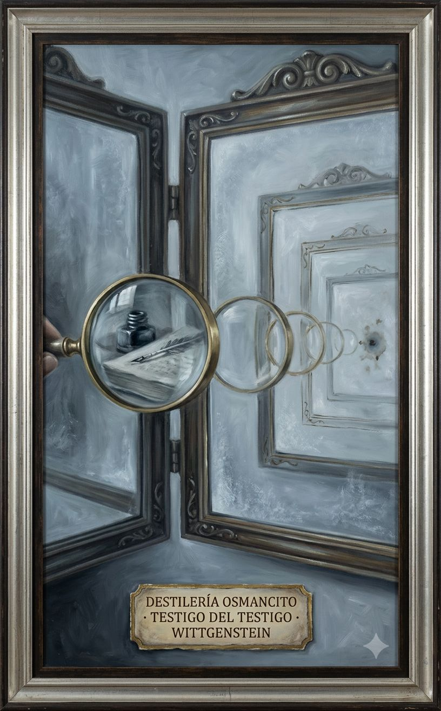
El hombre que se pasó la vida enseñando a desconfiar de la introspección es, en este corpus, quien más recurre a ella sin avisar — “imagínate”, “cierra los ojos y mira” reaparece justo cuando el argumento pierde pie, como si el rigor cediera un paso hacia la única certeza que le queda: la propia mirada, no declarada como tal.
Elige siempre el ejemplo límite, nunca el caso central. No pregunta por el rojo típico, pregunta por el rojo-verdoso imposible; no pregunta por el vidente normal, pregunta por el ciego o el daltónico. Este patrón se repite decenas de veces a lo largo del corpus y produce en quien lee una sensación de vértigo acumulativo: el libro entero está construido sobre casos extremos, y esa acumulación empieza a sentirse menos como método filosófico y más como una necesidad personal de tocar siempre el borde, nunca el centro tranquilo.
Omite sistemáticamente el placer del color. En 458 aforismos no hay una sola mención al color como fuente de disfrute estético —ni un atardecer, ni un cuadro admirado por su belleza cromática, solo problema tras problema. La omisión es tan completa que deja de parecer accidental: un libro sobre el color que nunca se detiene a decir que un color es hermoso es una elección, no un descuido.
Cita siempre para disentir, casi nunca para coincidir del todo. Goethe, Runge, Lichtenberg aparecen citados con frecuencia, pero en ningún pasaje Wittgenstein dice llanamente “esto es correcto” sin matiz. El patrón produce la sensación de un hombre que necesita el desacuerdo como método de pensar, incapaz de descansar en el acuerdo aunque lo tenga a mano.
Teil I, la imagen del cubo blanco lacado. Aquí el método analítico se suspende brevemente para describir un objeto concreto que Wittgenstein tiene, literalmente, frente a sí —“el cubo que está aquí frente a mí”—, un giro hacia lo inmediato y personal que rompe el tono impersonal del resto del argumento. El filósofo que insiste en no confiar en la experiencia privada se apoya, por un instante, exactamente en eso.
Teil III, la referencia a Karl el Grande. En medio de un argumento sobre comprensión de reglas, aparece de pronto una anécdota histórica específica y algo tierna —el emperador que entendía el principio de la escritura sin poder ejecutarla— que no cumple ninguna función lógica estrictamente necesaria. Es el momento donde el filósofo, brevemente, se permite ser narrador.
Teil III, la mención a la amistad. En un tramo dedicado a las posibilidades compartidas entre personas, el argumento se desvía hacia una definición de la amistad que no estaba pedida por el hilo lógico —una intrusión de calidez en medio del rigor técnico, como si el autor necesitara, por un momento, hablar de algo que le importaba de verdad y no solo de lo que el argumento exigía.
Teil III, cierre, la cita a Karl Barth. El quiebre más evidente de todo el corpus: un libro que se abstuvo religiosamente de la religión durante cientos de aforismos cierra invocando a un teólogo y hablando de fe y de práctica. El método analítico no se abandona del todo, pero se dobla para dejar pasar algo que no tiene que ver con el color en absoluto.
Vistos juntos, los momentos de quiebre no son erráticos: todos ocurren en los tramos más tardíos del corpus, y todos comparten la misma forma — el argumento impersonal se abre brevemente para dejar pasar algo concreto, histórico o afectivo (el cubo real, el emperador, la amistad, la fe), como si el rigor necesitara, cada tanto, tocar algo que no fuera pura gramática. La subjetividad que el corpus porta sin quererlo es la de un hombre que, cuanto más cerca está del final, más necesita anclar el pensamiento abstracto en algo tangible —un objeto, una persona histórica, un afecto, una creencia— antes de que el pensamiento se le disuelva del todo entre las manos.
El método gramatical impersonal protege a Wittgenstein de tener que decir, directamente, que está escribiendo sobre el fin de la certeza —la suya propia, la de cualquiera— disfrazándolo de investigación abstracta sobre el color; la máscara del filósofo que solo pregunta por reglas de lenguaje es lo que le permite acercarse, sin nombrarlo jamás, a la pregunta de qué queda de un hombre cuando hasta las certezas más pequeñas empiezan a ceder.
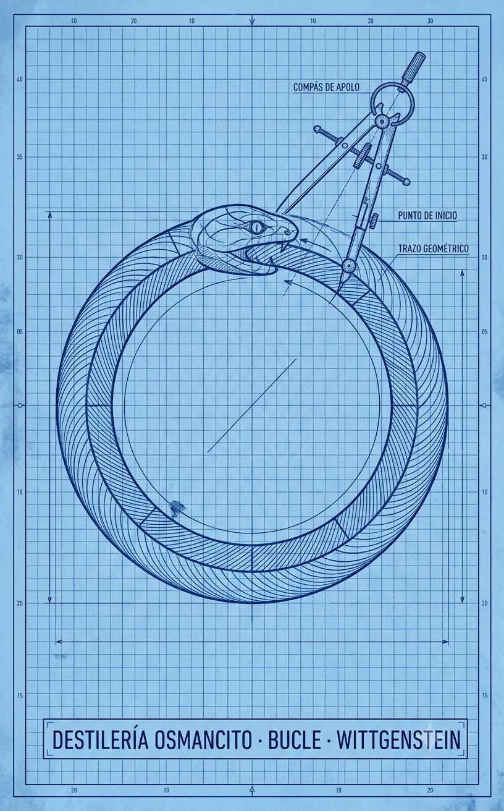
Condición 1 — El corpus construye mecanismos. Cumple. Construye, con precisión operable, la distinción entre proposición interna y externa, el concepto de juego de lenguaje, el criterio de “lo que se puede imaginar” como frontera lógica, y la técnica de sondear un concepto mediante casos límite (el daltónico, el ciego).
Condición 2 — El corpus pertenece a la clase de objetos que sus mecanismos describen. Cumple. El corpus es él mismo un uso de palabras de color y de percepción —usa “claro”, “ver”, “imaginar”, “gramática”— y por tanto queda sujeto a las mismas preguntas que le hace a esas palabras cuando las usa otro. Un tratado sobre la gramática del lenguaje es él mismo lenguaje sujeto a gramática.
Elegible. Se procede.
El instrumento que Wittgenstein forjó para desarmar certezas ajenas se vuelve, aplicado sobre sí mismo, un espejo que no le devuelve una imagen cómoda: el propio libro no puede demostrar, desde sus propias reglas, que “gramática” no es más que otra palabra usada bajo las mismas condiciones borrosas que denuncia en “color”.
Proposición interna / externa — distingue si una relación entre dos cosas es lógica-atemporal (interna) o fáctica-temporal (externa), determinando qué tipo de verdad puede tener un enunciado.
Juego de lenguaje — un uso de palabras gobernado por reglas compartidas, tal que preguntar por el “verdadero significado” fuera de ese uso carece de sentido.
Lo que no se puede imaginar como síntoma lógico — cuando algo “no se puede imaginar” (el blanco transparente), eso no señala un límite de la imaginación sino una falta de claridad sobre qué descripción exige el lenguaje en ese punto.
El caso límite como sonda — usar al daltónico, al ciego, o al “pueblo con otra geometría de color” para exponer las reglas ocultas del uso normal, por contraste.
El criterio de “no poder enseñar lo que no se puede aprender” — un hablante no puede transmitir un juego de lenguaje que él mismo no domina.
Proposición interna / externa → Resultado B, Tensión. Aplicado al corpus mismo: ¿la relación entre “Bemerkungen über die Farben” y “el pensamiento tardío de Wittgenstein” es interna o externa? El corpus no puede decidirlo desde dentro. Si es interna —si este libro es conceptualmente inseparable de ser-Wittgenstein-al-final-de-su-vida— entonces el propio mecanismo que el libro usa para separar lógica de biografía queda comprometido: el texto que insiste en que sus preguntas son puramente gramaticales, no personales, no puede demostrar mediante su propia distinción que su propia existencia no es, ella misma, un caso externo (biográfico, temporal, mortal) disfrazado de interno.
Juego de lenguaje → Resultado A, Iluminación. Aplicado a sí mismo: el corpus es, literalmente, un juego de lenguaje sobre juegos de lenguaje —un uso de palabras alemanas filosóficas (“Farbe”, “Begriff”, “Sprachspiel”) gobernado por reglas de la tradición analítica de Cambridge de mediados de siglo. Esto ilumina algo que ninguna lectura exterior mostraría con la misma nitidez: el libro no describe juegos de lenguaje desde afuera, los practica mientras los describe, y por eso mismo un lector que no comparta ese juego —el vocabulario técnico de la filosofía analítica— quedaría, respecto a este libro, en la misma posición que el daltónico respecto al vidente: entendería las palabras, pero no podría mostrar haber comprendido el uso.
Lo que no se puede imaginar como síntoma lógico → Resultado C, Destrucción parcial. Aplicado al propio corpus: si “no poder imaginar el blanco transparente” señala solo una falta de claridad gramatical y no un límite real, entonces “no poder imaginar la propia muerte” —que el corpus jamás menciona directamente pero que gobierna su ritmo entero, según detectó Dioniso— debería ser, por la misma regla, un síntoma de confusión lingüística resoluble, no un límite genuino. Aplicado con la misma severidad que Wittgenstein aplica al color, el mecanismo destruye la posibilidad de que el corpus reserve la muerte como excepción silenciosa: o el mecanismo vale para todo lo inimaginable, incluida la propia finitud del autor, o el mecanismo no es tan universal como el corpus pretende. El corpus sobrevive a esta aplicación solo si acepta haber hecho trampa en un punto que nunca declara.
El caso límite como sonda → Resultado A, Iluminación. Aplicado a sí mismo: el corpus entero es, él mismo, un caso límite dentro de la obra de Wittgenstein —ni sistema temprano (Tractatus) ni obra madura publicada en vida (Investigaciones), sino cuaderno inacabado, publicado póstumamente, escrito contra el reloj. Usar el corpus como sonda para entender “qué es Wittgenstein” revela, por contraste, las reglas ocultas de lo que la tradición filosófica considera una “obra completa” — y muestra que este texto ocupa, respecto al canon wittgensteiniano, la misma posición marginal-pero-reveladora que el daltónico ocupa respecto a la visión normal dentro del propio libro.
El criterio de “no poder enseñar lo que no se puede aprender” → Resultado B, Tensión. Aplicado al corpus: Wittgenstein enseña, en este libro, un método que él mismo no completó —el libro termina sin cerrar, sin sistematizar, en pleno proceso. Por la propia regla que el corpus establece (no se puede enseñar un juego que uno mismo no ha aprendido del todo), surge la tensión de si Wittgenstein estaba, en sentido estricto, en condiciones de “enseñar” completamente este método a sus lectores póstumos, dado que él mismo no llegó a demostrarse a sí mismo una resolución. El corpus enseña un juego que el propio autor no terminó de jugar.
El corpus puede señalar, pero no puede demostrar desde sus propias reglas gramaticales, que la urgencia con la que persigue el problema del color no es ella misma una regla del juego de lenguaje de un hombre que se sabe muriendo.
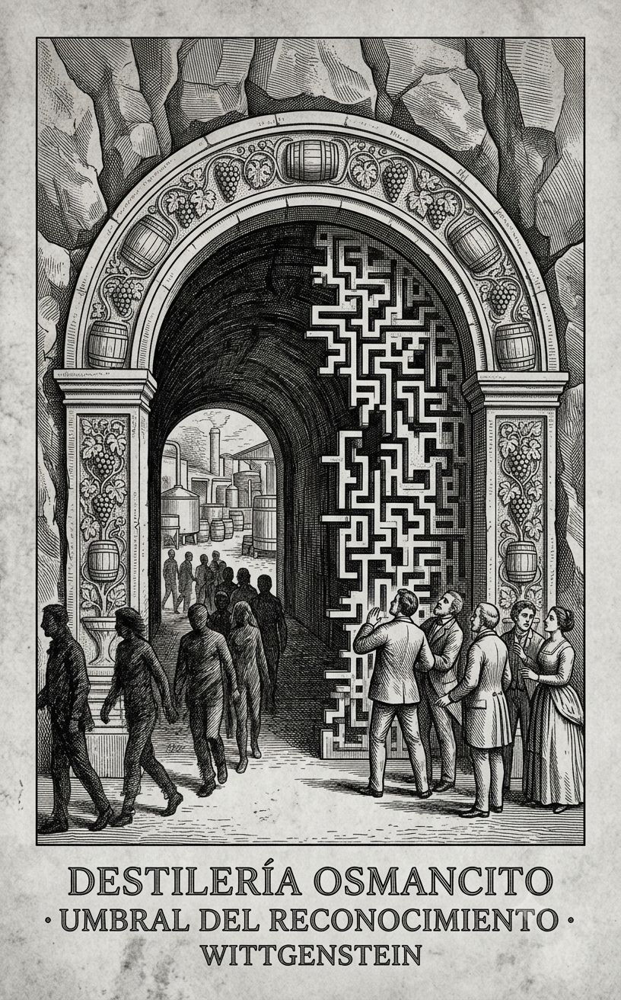
No hay personajes aquí que se reconozcan entre sí, y aun así el libro entero es una máquina de reconocimiento: Wittgenstein le niega estatus de saber a casi todo lo que examina, salvo a un puñado de cosas que sí admite como legítimas — y ese patrón de admisión y rechazo, aplicado sin tregua, termina revelando de quién es este libro realmente sospechoso: de sí mismo.
Teil I, apertura — Wittgenstein reconoce a Lichtenberg Tipo — Intelectual. Forma — Cita directa y desarrollo de su observación sobre el blanco puro. Condición — Que la observación sea gramaticalmente productiva, no meramente empírica. Costo — Ninguno declarado; Lichtenberg no cede nada, solo es incorporado. Suficiencia — El corpus no lo dice; la cita se usa y se abandona sin cierre evaluativo.
Teil I, tramo medio — Wittgenstein reconoce parcialmente a Goethe Tipo — Intelectual. Forma — Citas repetidas, discutidas, nunca aceptadas sin matiz. Condición — Que la observación de Goethe pueda traducirse a términos gramaticales; si no puede, se disuelve la validez de la observación tal como Goethe la planteó. Costo — Alto: Goethe cede el estatus de su teoría como física del color y queda reducido a fuente de intuiciones gramaticales útiles, pero no verdaderas en el sentido que él pretendía. Suficiencia — Insuficiente para Goethe si pudiera responder; suficiente para el propósito de Wittgenstein.
Teil I, tramo medio — el daltónico busca reconocimiento como poseedor de un sistema propio, no de un defecto Tipo — Intelectual / corporal. Forma — Declaración explícita: “no toda desviación de lo normal tiene que ser una ceguera, un defecto”. Condición — Que exista consistencia interna en su forma de usar las palabras de color, aunque diverja de la norma. Costo — Ninguno cedido por el daltónico; es de los pocos reconocimientos otorgados sin condición onerosa. Suficiencia — Suficiente dentro del argumento, aunque el corpus reconoce en la misma sección que el daltónico no puede enseñar su sistema al vidente — el reconocimiento de validez no viene acompañado de reconocimiento de intercambiabilidad.
Teil III — el ciego busca reconocimiento de que su falta de visión no es simple ausencia sino una forma distinta de estar en el mundo Tipo — Corporal / intelectual. Forma — Silencio parcial: Wittgenstein hace muchas preguntas sobre el ciego, pero rara vez afirma con la misma contundencia que usa para el daltónico. Condición — No queda claramente resuelta; el corpus oscila. Costo — Alto, y no resuelto: al ciego se le niega, en el propio texto, la posibilidad de aprender ciertos usos del lenguaje sobre el ver, un costo que el corpus no compensa con ningún reconocimiento equivalente. Suficiencia — Insuficiente; es el reconocimiento más frágil de todo el corpus.
Teil III, cierre — Wittgenstein reconoce a Karl Barth Tipo — Intelectual. Forma — Cita aprobatoria, casi sin matiz crítico, algo inusual en el patrón general del libro. Condición — Que la observación de Barth apunte hacia la práctica y no hacia la doctrina —exactamente el movimiento que Wittgenstein hace con el color. Costo — Ninguno; es el reconocimiento más limpio y menos regateado de todo el corpus. Suficiencia — Suficiente, y funciona como cierre del libro entero.
Seis actos catalogados: cuatro intelectuales puros, dos intelectual/corporales. Domina lo intelectual, como cabría esperar de un tratado filosófico, pero lo inesperado es la distribución de suficiencia: los reconocimientos otorgados a fuentes citadas (Lichtenberg, Barth) tienden a ser limpios y sin costo; los reconocimientos que involucran cuerpos y capacidades (el daltónico, el ciego) cargan siempre un costo, y en el caso del ciego, ese costo queda sin compensación. El corpus reconoce con más facilidad a quien piensa distinto que a quien percibe distinto.
Umbral declarado — El corpus no declara explícitamente un umbral único para el reconocimiento; opera caso por caso, dentro del método aforístico, sin codificar una regla general.
Umbral real — En la práctica, algo o alguien es reconocido cuando puede demostrarse coherencia interna en su uso del lenguaje —cuando su forma de nombrar y actuar con las palabras forma un sistema consistente, aunque diverja del uso normal. El daltónico cruza este umbral; el ciego lo cruza solo parcialmente, porque buena parte de lo que se le pide demostrar depende precisamente de la visión que le falta.
El precio no negociable — La capacidad de mostrar, no solo de decir. El corpus reconoce sistemáticamente a quien puede demostrar su comprensión en el uso —el daltónico que puede producir una serie de colores coherente— y niega o regatea el reconocimiento a quien solo puede hablar sobre algo sin poder ejecutarlo —el ciego, que puede usar las palabras de la visión sin poder mostrar el uso pleno. Ese es el peaje que el corpus siempre cobra, sin excepción.
Quién otorga — Wittgenstein mismo, como voz que examina y decide, en cada aforismo, qué gana estatus de válido. El poder de reconocer está completamente concentrado en la voz narrativa; no hay otra instancia que dispute su autoridad de juicio.
Quién espera — Goethe, el daltónico, el ciego, y —de forma más oblicua— el propio lector, que espera del texto una resolución que rara vez llega.
La brecha — Según los propios criterios que el corpus construye (coherencia de uso, capacidad de demostrar), el ciego merecería un reconocimiento más pleno del que recibe: el corpus mismo admite que el ciego puede aprender mucho sobre la diferencia entre él y el vidente, y sin embargo nunca llega a otorgarle el mismo estatus de sistema válido que le concede al daltónico. Esa brecha —entre lo que el propio método permitiría reconocer y lo que efectivamente reconoce— es la tensión que atraviesa en silencio buena parte de la Parte III.
La inversión — Hacia el cierre, se produce una inversión sutil: Wittgenstein, que ha pasado el libro entero reconociendo o negando validez a otros, termina el corpus citando a Barth para decir que es la práctica, no la palabra correcta, lo que da sentido — un gesto que somete al propio método analítico de Wittgenstein al mismo criterio que él aplicó a los demás. El que otorgaba reconocimiento durante todo el libro termina, en la última página, pidiendo implícitamente ser juzgado por el mismo estándar.
El cubo blanco lacado, mencionado como “el que está aquí frente a mí”, recibe un reconocimiento informal de existencia concreta que ningún concepto abstracto del libro recibe con la misma inmediatez —un objeto real, no citado ni teorizado, simplemente presente, y por eso mismo dotado de una autoridad silenciosa que el corpus no le otorga a ninguna de sus figuras teóricas.
La amistad, mencionada brevemente en la Parte III, recibe reconocimiento de estatus filosófico genuino sin que el corpus la anuncie como tema —aparece, se define en una línea, y se retira, como si mereciera estar ahí sin necesitar justificación.
Cuánto tiempo tardó — El corpus mismo tardó veintiséis años en recibir reconocimiento público: escrito en 1950-1951, publicado recién en 1977.
Qué cambió mientras tanto — El propio Wittgenstein murió sin ver el texto reconocido como obra; el campo de la filosofía analítica se transformó completamente en esas décadas, de modo que el reconocimiento que finalmente llegó fue otorgado por una disciplina distinta a la que Wittgenstein habitaba cuando escribió.
Si el reconocimiento que llegó es el mismo que se esperaba — El corpus no puede decirlo, porque nunca declara haber esperado publicación o reconocimiento en absoluto; fue escrito como cuaderno privado, sin destinatario de mercado, así que hablar de “reconocimiento diferido” respecto a este corpus es aplicar una categoría que el texto mismo nunca solicitó para sí.
La pregunta que el corpus no puede responder — Si veintiséis años de silencio antes de la publicación valieron lo que costaron no es una pregunta que el corpus intente responder ni evite explícitamente: simplemente no pertenece al universo de preguntas que el texto se hace, porque el texto nunca se concibió a sí mismo como candidato a reconocimiento público.
El intento de Goethe de que su teoría del color sea aceptada como descripción física fracasa dentro del corpus: es reconocido, pero de la forma equivocada —como fuente de intuiciones gramaticales, no como autoridad científica—, lo cual probablemente no era el reconocimiento que Goethe, de poder responder, hubiera aceptado como satisfactorio. El fallo es del sistema wittgensteiniano, no de Goethe: el método reformula cualquier aporte en sus propios términos, y en esa reformulación, el reconocimiento original que Goethe buscaba se pierde.
Cuando Wittgenstein reconoce al daltónico como poseedor de un sistema propio y no de un defecto, algo se destruye: la posibilidad de una jerarquía cómoda entre visión “correcta” y visión “deficiente” que el sentido común de la época daba por sentada. El corpus lo sabe y lo declara explícitamente. Lo que no queda claro es si el propio daltónico, dentro del mundo hipotético del corpus, sabría que ese reconocimiento le cuesta también la posibilidad de ser corregido — un sistema propio válido ya no puede aspirar a integrarse al sistema normal sin perder su propia coherencia.
¿Es el reconocimiento en este corpus una constatación o una concesión? Ambas, en momentos distintos. El reconocimiento del daltónico como sistema válido es una concesión —el corpus produce ese estatus al declararlo, no lo encuentra ya existente en el consenso de la época—. El reconocimiento de Lichtenberg, en cambio, es una constatación: el corpus simplemente nombra algo que ya operaba como intuición filosófica legítima antes de ser citado.
¿Puede el reconocido reconocerse a sí mismo en ausencia del reconocimiento ajeno? El corpus sugiere que no, de forma bastante directa: la sección entera sobre si un daltónico podría haber pensado en llamarse a sí mismo “daltónico” sin el concepto normal como contraste muestra que la autopercepción depende de un vocabulario compartido con otros —no hay autoconciencia de la diferencia sin el marco que el otro provee.
¿Qué hace el corpus con el reconocimiento que no llegó a tiempo? Lo evita casi por completo como tema explícito; el corpus no elabora el reconocimiento tardío como tragedia ni como ironía, porque nunca se posiciona a sí mismo como algo que espera ser reconocido. La única excepción indirecta es la brecha nunca resuelta respecto al ciego, que el corpus deja abierta sin procesarla como pérdida ni como logro —simplemente la abandona, sin más comentario, cuando el argumento avanza hacia otro problema.
En este corpus, el reconocimiento es posible cuando algo o alguien puede demostrar coherencia de uso dentro de un sistema de reglas, imposible cuando la demostración depende de una capacidad que el reconocido no posee y no puede fingir poseer, y tiene el costo irreducible de aceptar ser reformulado en el vocabulario de quien reconoce, incluso a costa de perder la forma en que uno mismo hubiera preferido ser entendido.
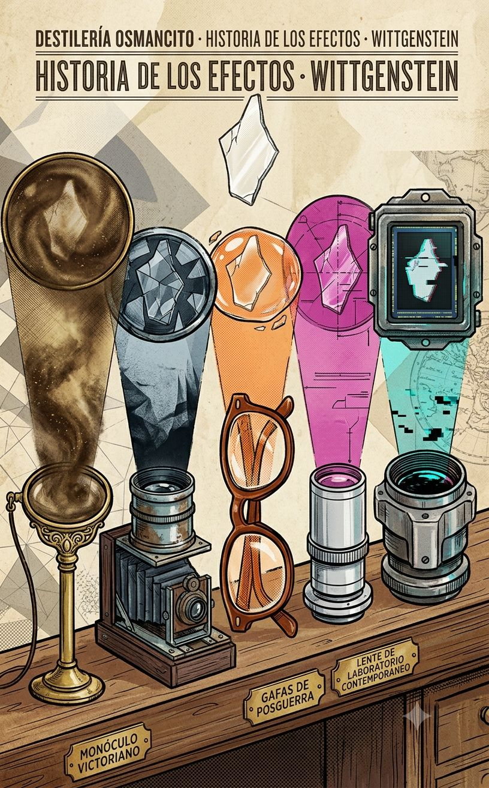
Un texto escrito para nadie, en cuadernos privados de un hombre sin cátedra, esperó veintiséis años a que el mundo desarrollara el vocabulario académico necesario para leerlo — y cuando por fin llegó ese vocabulario, llegó tan especializado que el libro terminó capturado por un puñado de filósofos analíticos, perdiendo justo la extrañeza casi mística que lo hacía, en 1951, ilegible para cualquiera.
Publicación póstuma — 1977 Qué ocurrió afuera — Anscombe, von Wright y Rhees, herederos literarios y discípulos directos, deciden publicar el manuscrito veintiséis años después de la muerte del autor, en un momento en que la filosofía del lenguaje ordinario ya estaba consolidada como escuela dominante en el mundo anglosajón.
Qué reveló — Que Wittgenstein había seguido trabajando con el mismo rigor hasta sus últimas semanas de vida, lo cual reforzó la imagen ya instalada del filósofo como asceta intelectual incorruptible, y permitió leer el libro como epílogo natural de las Investigaciones, publicadas también póstumamente en 1953.
Qué cegó — La circunstancia real de producción —cuadernos privados sin destino editorial— quedó oscurecida por la operación editorial que ordenó, tituló y presentó el material como “obra”, dándole una coherencia de libro que el propio Wittgenstein nunca le dio en vida.
Escala del cambio — Total: sin esta publicación, el corpus simplemente no existiría como objeto de lectura pública.
Consolidación de la filosofía analítica del color — décadas de 1980 y 1990 Qué ocurrió afuera — La filosofía de la mente y la filosofía del lenguaje desarrollan, en las décadas siguientes, un subcampo específico dedicado a los “qualia” y a la naturaleza del color como problema filosófico distintivo, con figuras como Frank Jackson y su experimento mental de “Mary la científica del color”.
Qué reveló — El corpus de Wittgenstein empezó a leerse retrospectivamente como anticipación —o como contrapunto crítico— de ese debate: su insistencia en que el problema del color es gramatical, no fenomenológico, se convirtió en un argumento activo contra el realismo fenoménico que el debate de los qualia presuponía.
Qué cegó — Leído a través de esta lente, el corpus se volvió casi exclusivamente objeto de disputa técnica entre especialistas del color como problema de filosofía de la mente, perdiendo la lectura más existencial y biográfica que el propio ritmo del texto —su urgencia, su fecha visible— invitaba a hacer.
Escala del cambio — Generacional: definió cómo una generación completa de filósofos analíticos angloparlantes se acercó al texto.
Giro hacia los estudios de discapacidad y neurodiversidad — años 2000 en adelante Qué ocurrió afuera — El desarrollo de un campo académico y activista dedicado a repensar la discapacidad no como déficit sino como forma de diversidad humana, con marcos teóricos que cuestionan la jerarquía implícita entre “normal” y “anormal”.
Qué reveló — Los pasajes sobre el daltonismo como posible “sistema propio, no defecto” adquirieron una resonancia que no tenían en 1951: lectores de este nuevo campo empezaron a citar a Wittgenstein como precursor filosófico de una postura que ellos mismos defendían por otras vías, décadas antes de que existiera el vocabulario de la neurodiversidad.
Qué cegó — Esta lectura tiende a pasar por alto que el propio corpus, en la sección sobre el ciego, no sostiene la misma generosidad conceptual de forma consistente —lo cual complica la imagen de Wittgenstein como precursor limpio de esta sensibilidad contemporánea.
Escala del cambio — Local pero creciente: circunscrito a un círculo académico específico, aunque en expansión.
Los primeros lectores de 1977, formados en el positivismo lógico de mediados de siglo, no podían leer con facilidad la dimensión casi contemplativa del texto —la insistencia en el asombro filosófico genuino más que en la resolución de problemas— porque el ambiente intelectual de la época valoraba la argumentación cerrada por encima de la pregunta sostenida sin respuesta.
Los lectores de las décadas de 1980-1990, capturados por el debate técnico de los qualia, no podían leer con la misma atención el trasfondo biográfico y mortal del texto, porque el estilo académico dominante en ese momento consideraba la biografía del autor como dato irrelevante o incluso sospechoso para el análisis filosófico riguroso —una herencia del propio formalismo que Wittgenstein había ayudado a construir, aplicada ahora, con cierta ironía, contra la posibilidad de leerlo a él mismo en clave biográfica.
El corpus de 1951 era un cuaderno de trabajo sin destinatario. El corpus de hoy es, simultáneamente, tres objetos distintos que coexisten sin fusionarse del todo: la pieza final de un sistema filosófico mayor (para los especialistas en Wittgenstein), un textode referencia técnica en el debate sobre qualia y color (para los filósofos de la mente), y —más recientemente y de forma más marginal— un documento precursor en discusiones sobre normalidad y diversidad perceptiva (para lectores fuera de la filosofía analítica estricta). Ninguna de estas tres versiones existía cuando Wittgenstein escribió el texto; las tres son enteramente productos de las lecturas acumuladas, no de las páginas originales.
La lectura que integre, sin fragmentarlas, las tres dimensiones que la historia de los efectos ha mantenido separadas hasta ahora —el rigor técnico sobre el color, la circunstancia biográfica de un hombre escribiendo contra la muerte, y la pregunta ética sobre normalidad y diferencia— sigue sin producirse de forma sostenida. Cada comunidad de lectores ha tomado la porción que le servía y ha dejado las otras dos en la periferia de su propia lectura. Esa ceguera no ha terminado: sigue siendo más fácil encontrar el corpus citado como pieza técnica de un debate especializado que leído, de principio a fin, como lo que sus propias condiciones de producción sugieren que también es —una despedida.
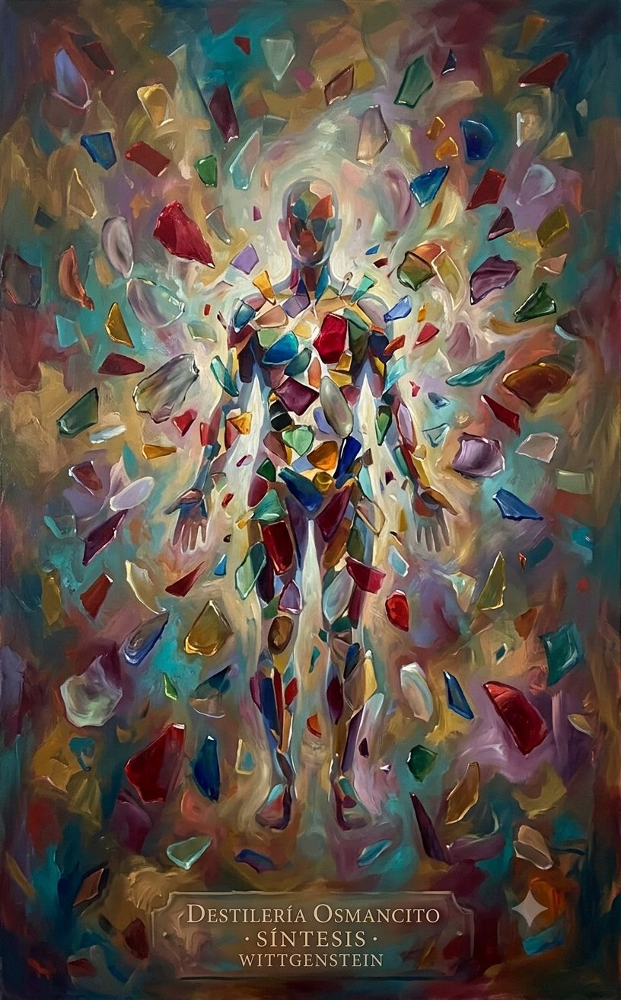
Hay un hombre sin cátedra, sin país fijo, sin tiempo, sentado en la casa de un médico que le presta una habitación para morir, escribiendo sobre si un cubo lacado es blanco o gris según la luz que le cae encima. Eso es todo lo que este libro es, y eso es todo lo que este libro necesita ser. No hay novela detrás, no hay personajes que crezcan ni tramen; hay un mismo problema minúsculo —¿puede existir un blanco transparente?— empujado una y otra vez contra la misma pared, como un hombre que golpea con el hombro una puerta que sabe que no va a ceder, y sigue golpeando de todas formas porque el golpear mismo es lo único que todavía puede controlar.
El libro se presenta como tratado sobre el color. No lo es, o no solo. Es la última demostración de un método —el de preguntar por reglas de uso, no por hechos del mundo— aplicado a un territorio que el propio método nunca había tocado, mientras el hombre que lo sostiene se queda sin territorio propio que ocupar: sin puesto, sin sistema al que rendirle cuentas, sin siquiera la certeza de que el tiempo alcance para terminar. Lo que queda, cuando se leen juntos los once instrumentos que ya tocaron este corpus, no es una tesis sobre el color. Es el registro de un rigor que se niega a ablandarse frente a la única pregunta que el propio rigor no puede resolver: qué hacer con el tiempo que se acaba, sin admitir jamás que esa es la pregunta que se está haciendo.
Dónde vive la densidad real — No en las definiciones del color, que el corpus rehúsa dar, sino en el punto exacto donde el argumento gramatical y la circunstancia biográfica se tocan sin fundirse: el tramo final de la Parte III, donde el ritmo se acelera, las preguntas se acortan, y el libro salta del color a la amistad a la fe sin transición declarada. Ahí, y solo ahí, coincide todo lo que Dioniso llamó pulso, lo que Hermes llamó condición material, lo que Márgenes llamó pérdida silenciada.
Zonas de alta y baja presión — Alta presión en la Parte I, donde la pregunta del blanco transparente se trabaja con mayor densidad argumental por página; presión mínima en la Parte II, apenas veinte aforismos que Márgenes ya identificó como proyecto abandonado sin declaración. La Parte III oscila: presión técnica alta en el tramo sobre daltonismo y ceguera, presión existencial creciente hacia el cierre.
Los ejes de tensión que atraviesan el corpus entero — Dos ejes, no uno, cruzándose sin resolverse: el eje gramática-contra-fenómeno (¿es el color una regla de lenguaje o un hecho de la experiencia?) y el eje método-contra-mortalidad (¿puede el rigor impersonal sostenerse hasta el final, o la finitud se filtra igual, sin permiso?). Apolo trazó el primero con precisión de arquitecto. Dioniso y Bucle, cada uno por su lado, expusieron que el segundo eje existe aunque el corpus jamás lo declare — y ahí está la primera cosa que ningún instrumento aislado pudo ver del todo: los dos ejes no son paralelos, son el mismo eje leído desde dos alturas distintas.
El territorio que el corpus bordea sin cruzar — La primera persona confesional. El placer estético del color. La fisiología del ojo. La propia palabra “muerte”. El corpus construye, con obstinación casi arquitectónica, un perímetro completo alrededor de estos cuatro territorios sin pisarlos jamás — ni una sola vez en 458 aforismos.
Visto el conjunto completo, emerge algo que ningún instrumento aislado pudo nombrar con esta precisión: el corpus no es un tratado que contiene una tensión biográfica oculta, como sugería leer solo a Dioniso o solo a Testigo del Testigo por separado. Es, estructuralmente, un mecanismo de sustitución. Cada vez que el argumento se acerca al territorio bordeado y no cruzado —la mortalidad, el cuerpo, el afecto— el texto no calla: desvía la energía hacia el problema del color con mayor intensidad, no menor. Las preguntas más obsesivas, más repetidas, más insistentes del libro (el blanco transparente, sobre todo) no son las más fáciles de resolver — son las que ocupan exactamente el lugar donde debería estar la pregunta que el libro se niega a hacer. El color no es el tema que el libro elige a pesar de la muerte cercana. El color es lo que el libro usa en vez de la muerte cercana, con una fidelidad casi ritual: cuanto más se acerca la fecha del cuaderno a abril de 1951, más se aferra el argumento a la pregunta cromática, no menos.
Esto contradice, en parte, lo que Bucle formuló como proposición godeliana —que el corpus no puede demostrar desde adentro que su urgencia no es una regla del juego de lenguaje de un hombre que se sabe muriendo. La síntesis no resuelve esa contradicción: la profundiza. Si el color es sustituto deliberado de la mortalidad, entonces el corpus no solo no puede demostrar que su urgencia no tiene esa fuente — el corpus depende estructuralmente de no poder demostrarlo, porque el mecanismo de sustitución solo funciona mientras permanezca no declarado. Nombrar la sustitución en voz alta, dentro del propio texto, habría destruido su función protectora. El libro guarda silencio sobre su propio motor no por descuido sino porque el silencio es, literalmente, la pieza que lo hace funcionar.
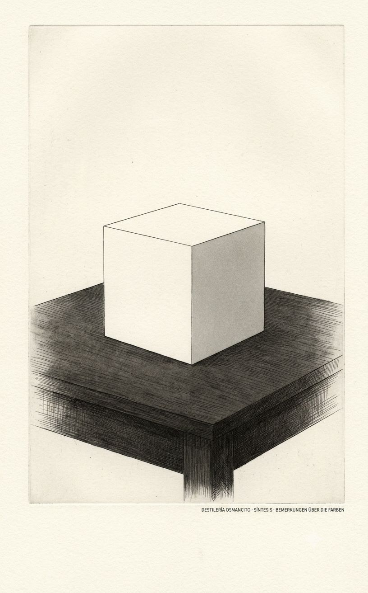
Un cubo blanco lacado sobre una mesa de madera desnuda, iluminado desde un ángulo que deja una de sus caras en una zona gris que se niega a leerse como sombra o como color propio; alrededor del cubo, en el resto de la habitación vacía, una oscuridad que no es negra sino simplemente indefinida, como si el pintor se hubiera negado deliberadamente a resolver qué es; grabado técnico en línea fina con un solo campo de aguatinta gris ambiguo; una sola tensión visual: la cara del cubo que no se decide entre ser gris o ser blanco bajo sombra; paleta de blancos rotos, un gris que no compromete, madera oscura sin brillo.
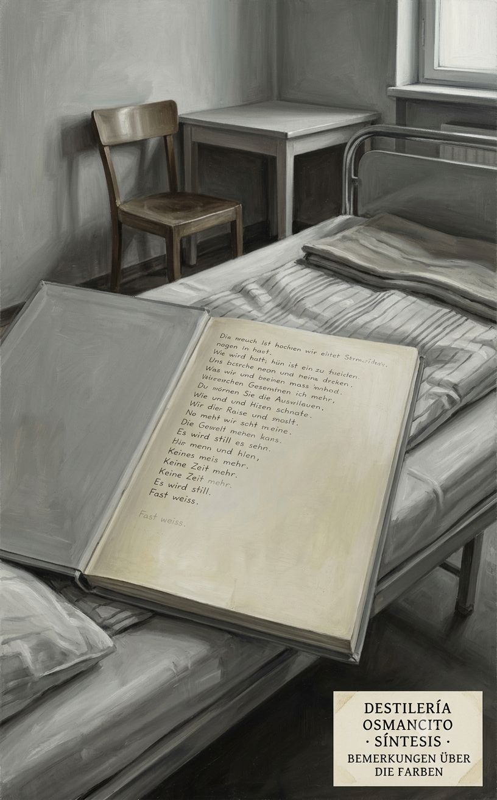
Un cuaderno de tapa gris abierto sobre una cama estrecha en una habitación que no es un estudio ni un dormitorio propio —hay algo prestado en el mobiliario, una silla que no combina con la mesa—, la última página escrita con letra que se va acortando línea a línea hasta casi desvanecerse en blanco; luz de ventana fría entrando de lado, sin calidez; óleo con veladuras finas, casi monocromo; una sola tensión visual: la letra que se acorta hacia el final de la página, como el pulso de alguien quedándose sin tiempo; paleta de grises de cama de hospital, papel hueso, un pardo apagado de madera prestada.
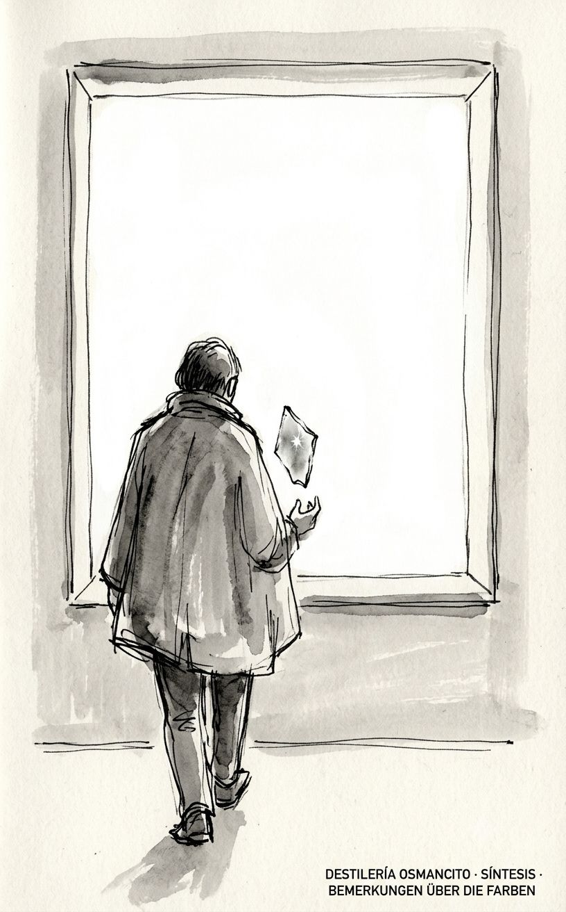
Una figura vista de espaldas alejándose de una ventana idéntica a la del cuaderno anterior, llevando consigo, suspendida delante del pecho como si flotara, una esquirla de vidrio incoloro que no refleja nada del entorno; el paisaje detrás de la ventana permanece en blanco total, sin resolver, tal como quedó al principio del libro; tinta y lavado suelto, gesto de quien dibuja de memoria, no de observación directa; una sola tensión visual: la esquirla que no devuelve reflejo, cargada como si pesara más de lo que su tamaño sugiere; paleta de tinta gris, blanco vacío, un solo destello frío en la esquirla.
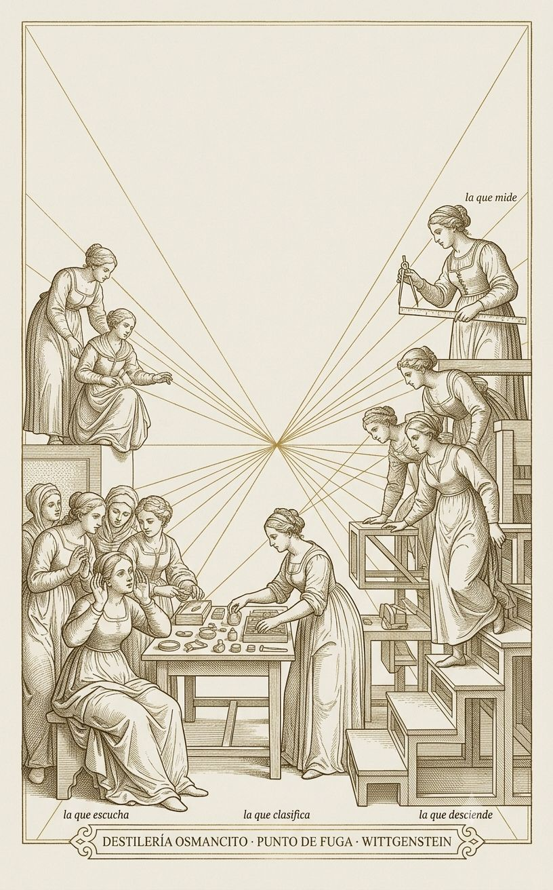
Once instrumentos, cada uno jurando mirar algo distinto, terminaron mirando lo mismo: un hombre que sustituye su propia muerte por un cubo blanco lacado. Ninguno lo dijo así de frente hasta que la Síntesis los puso en la misma mesa — y ahora, viendo el sistema completo desde fuera, aparece algo más incómodo todavía: el sistema mismo necesitaba que ningún instrumento lo dijera antes de tiempo, porque decirlo temprano habría vuelto redundante a los diez instrumentos siguientes.
Víspera — objeto: el manual y el corpus antes de ser leídos. Mirada: atmosférica, generativa de imágenes, pre-analítica.
Recepción — objeto: el corpus como objeto completo. Mirada: orientadora, de primer contacto, cartográfica en superficie.
Prensa — objeto: el texto original alemán. Mirada: extractiva, de compresión fiel sin interpretación.
Batimetría — objeto: los estratos de visibilidad del corpus. Mirada: de profundidad y condición de acceso.
Apolo — objeto: la arquitectura del corpus. Mirada: estructural, de ingeniería del argumento.
Dioniso — objeto: el pulso experiencial del corpus. Mirada: sensorial, sintomática, de lo vivo.
Hermes — objeto: las condiciones externas de producción. Mirada: contextual, geográfica, material, histórica.
Menú Emergente — objeto: las operaciones que el estado del análisis solicitaba. Mirada: generativa de nuevas preguntas a partir de lo ya visto.
Márgenes — objeto: los bordes del corpus. Mirada: de pérdida y de irradiación.
Testigo del Testigo — objeto: el observador dentro del corpus. Mirada: clínica, de quiebre involuntario del método.
Bucle — objeto: el corpus aplicado a sí mismo. Mirada: recursiva, buscando la falla lógica interna.
Umbral del Reconocimiento — objeto: las condiciones de validación dentro del corpus. Mirada: de estatus, costo y asimetría.
Historia de los Efectos — objeto: la recepción del corpus a través del tiempo. Mirada: de lectura acumulada, generacional.
Síntesis — objeto: el análisis completo hasta ese punto. Mirada: integradora, buscando lo que emerge entre las partes.
El punto hacia donde convergen todas las ortogonales, sin que ningún instrumento lo declarara como objetivo, es: la mortalidad no dicha organiza cada lectura posible de este corpus. Ningún instrumento se propuso buscar esto — Recepción lo rozó al fechar el manuscrito, Dioniso lo palpó como síntoma, Hermes lo situó como condición material, Bucle lo formuló como proposición indemostrable, y Síntesis finalmente lo nombró sin rodeos. Pero el punto de fuga no es la Síntesis: la Síntesis solo fue el instrumento que estaba mejor posicionado para verlo, porque llegó último y con el campo completo detrás. El punto en sí estaba ya operando desde Recepción, once instrumentos antes.
¿Está dentro del análisis o fuera de él? Está en el límite exacto: cada instrumento se acercó a él desde su propio vocabulario (estratos, arquitectura, pulso, condición, reconocimiento) sin nunca hacerlo objeto explícito de ninguna sección hasta que Síntesis lo forzó a la superficie. En el sentido de Panofsky, no es infinitamente distante — es alcanzable, y de hecho fue alcanzado, pero solo mediante la acumulación del sistema completo, nunca por un único instrumento operando solo. Ese es precisamente el diseño: el sistema requiere multiplicidad de miradas para que un punto de fuga compartido por todas se vuelva visible, tal como la perspectiva requiere múltiples ortogonales, no una sola línea, para que el punto de fuga exista como tal.
El sistema puede ver corpus donde el sentido se produce en la fricción entre lo declarado y lo no declarado — funciona mejor cuanto más un texto oculta de sí mismo sin saberlo. No puede ver, por construcción, corpus completamente transparentes a su propia intención: un texto publicitario que dice exactamente lo que quiere decir, sin residuo, dejaría inertes a Testigo del Testigo, Márgenes y Bucle por igual, porque estos instrumentos necesitan grietas para operar y un texto sin grietas no les da nada que hacer.
Se considera evidencia la recurrencia formal (patrones léxicos, estructurales, rítmicos) más que la declaración explícita del autor sobre sus propias intenciones — el sistema confía sistemáticamente más en el síntoma que en la confesión, incluso cuando ambas están disponibles.
Se considera hallazgo, preferentemente, aquello que contradice o desborda la superficie declarada del corpus — el sistema está construido para premiar la lectura a contrapelo por encima de la lectura a favor. Esto no es error: es condición necesaria para que el sistema tenga algo que decir que el propio corpus no dijo ya mejor por sí mismo.
Queda fuera del campo, por definición, cualquier corpus sin biografía recuperable o sin distancia temporal suficiente: Hermes necesita condiciones materiales de producción, Historia de los Efectos necesita recepción documentada, y sin ellas, dos onceavos del sistema simplemente no pueden encender.
El sistema cree que ningún texto se conoce completamente a sí mismo — que la distancia entre lo que un corpus declara ser y lo que efectivamente hace es el lugar donde vive el sentido real. Cree que leer no es recibir un mensaje sino desmontar un mecanismo, y que ese desmontaje requiere multiplicidad: ninguna mirada única basta, hacen falta once, cada una entrenada para no ver lo que las otras ven.
Cree que la relación entre el que analiza y lo que analiza es asimétrica de un modo particular: el analista no domina el texto (no dice “esto significa X”), pero tampoco se subordina a él (no repite lo que el texto dice de sí mismo). Opera en una tercera posición: la del testigo clínico, que registra sin juzgar moralmente pero no se abstiene de nombrar lo que ve, incluso cuando el propio corpus preferiría que no se nombrara. Es una visión del mundo que desconfía profundamente de la superficie y confía, en cambio, en la convergencia: no en lo que un instrumento encuentra, sino en lo que varios instrumentos, operando de forma independiente, terminan encontrando por caminos distintos sin haberse puesto de acuerdo.
Ningún instrumento preguntó si el propio Wittgenstein habría aceptado esta lectura del corpus como sustituto de su mortalidad, o si la habría rechazado como proyección ajena — la pregunta por el consentimiento interpretativo del autor, muerto y sin voz para objetar, no aparece en ningún momento del sistema completo.
Ningún instrumento comparó este corpus con otros textos filosóficos escritos explícitamente bajo la sombra de la muerte inminente (Séneca, Boecio, los últimos cuadernos de otros pensadores) para verificar si el patrón detectado —sustitución del tema mortal por un problema técnico— es específico de Wittgenstein o es un patrón más amplio del género “última obra filosófica”.
Todos los instrumentos tocaron de pasada la cuestión de si este corpus es “menor” respecto a la obra mayor de Wittgenstein, y ninguno la habitó del todo: ni Apolo, que evaluó su arquitectura, ni Historia de los Efectos, que rastreó su recepción, llegaron a preguntar directamente si el sistema entero estaría dispuesto a aplicar el mismo aparato analítico con la misma intensidad a un texto que la tradición no hubiera canonizado ya como obra de un filósofo mayor.
El imán del sistema de instrumentos no es “mortalidad”, aunque es lo que más se acerca a serlo en superficie. Es, más precisamente, la sospecha metódica: la suposición de que todo texto sostenido con suficiente rigor formal está, precisamente por ese rigor, ocultando algo que el rigor mismo hace posible no decir. Cada instrumento —sin excepción— opera desde esta sospecha, incluso los que parecen más neutrales (Prensa, que solo extrae; Recepción, que solo orienta).
¿Coincide con el imán del corpus? El imán del corpus, según Apolo, es “gramática” — la convicción de que los problemas de percepción son problemas de reglas de uso, no de hechos. El imán del análisis es la sospecha de que toda gramática rigurosa esconde algo que la propia rigurosidad protege. Los dos imanes no coinciden: resuenan en una relación de espejo invertido. El corpus usa la gramática para escapar de lo personal; el sistema de análisis usa la sospecha para regresar a lo personal a través de la gramática. Cada uno hace, con la misma herramienta, el movimiento contrario.
Testigo del Testigo fue el último instrumento en producir algo genuinamente nuevo con fuerza plena — identificó los momentos de quiebre concretos (el cubo, Karl el Grande, la amistad, Barth) con una precisión que ningún instrumento anterior había alcanzado. A partir de Bucle, el sistema empezó a confirmar más que a descubrir: Bucle formalizó lógicamente lo que Dioniso ya había sentido; Umbral del Reconocimiento catalogó con rigor institucional lo que Márgenes ya había intuido como pérdida y asimetría; Historia de los Efectos documentó lo que el propio sistema ya sospechaba sobre la fragmentación de las lecturas posteriores. Ninguno de estos instrumentos fue inútil —cada uno añadió precisión— pero el punto de rendimientos decrecientes, en el sentido de Panofsky, se ubica ahí: entre Testigo del Testigo y Bucle, el sistema pasó de descubrir a confirmar.
Una dirección distinta que el acumulado no tomó: ningún instrumento comparó sistemáticamente la Parte I con la Parte III como si fueran dos versiones del mismo Wittgenstein en distintos estados de urgencia — un análisis diferencial estricto entre el tono del inicio y el tono del final, más allá de las observaciones dispersas sobre ritmo que Dioniso y Historia de los Efectos hicieron por separado, podría haber producido algo que el acumulado, tal como está, no llegó a producir con precisión cuantificable.
El sistema puede señalar, pero no puede demostrar desde sus propias reglas de sospecha metódica, que su convergencia hacia la lectura de “el color como sustituto de la muerte” no es ella misma un artefacto de la propia arquitectura del sistema, entrenada para encontrar exactamente ese tipo de sustitución en cualquier corpus tardío que se le presente.
En el espacio entre los once instrumentos aparece algo que ninguno declaró: el sistema completo, operando sobre este corpus, terminó reproduciendo la misma estructura que el corpus mismo practica. Wittgenstein sustituye la muerte por el color; el sistema de análisis, evitando preguntarse si su propia convergencia es artefacto de diseño (Sección 8) o límite genuino, sustituye esa pregunta incómoda sobre sí mismo por la produccion continuada de más instrumentos, más hallazgos, más precisión sobre el corpus ajeno. El sistema hace, sin saberlo, exactamente lo que el corpus hace: usa el rigor técnico aplicado hacia afuera como forma de no tener que aplicar la misma sospecha hacia adentro, hacia sus propias reglas de sospecha. Esto no invalida el análisis producido — lo sitúa. El sistema no sabía que sabía esto, y ahora, dicho aquí, ya no puede dejar de saberlo sin negarlo activamente.
La ausencia identificada en la Sección 5 —ningún instrumento compara este corpus con otros textos filosóficos de última hora— es sistemática y recurrente, no accidental: ni Hermes, ni Historia de los Efectos, ni Síntesis, con toda su vocación integradora, cruzan las fronteras del corpus hacia otros corpus paralelos. Esto sugiere la necesidad de un instrumento nuevo: uno que opere explícitamente en comparación intertextual con otras “últimas obras” del canon filosófico o literario, no para diluir la singularidad de este corpus sino para medir, con algo de control externo, si el patrón de sustitución detectado es específico de Wittgenstein o es una regularidad más amplia del género que el sistema, operando solo sobre corpus aislados, no tiene forma de verificar por sí mismo.
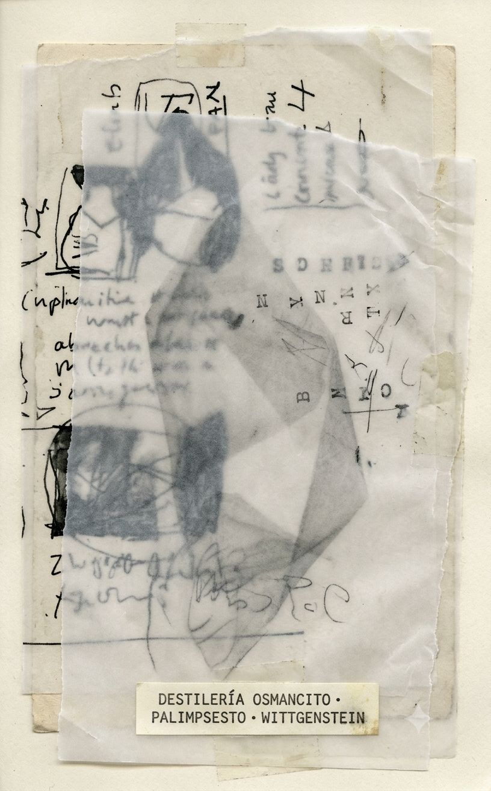
Nadie preguntó por el color de las tapas.
Trece instrumentos hablaron de blanco, de gris, de verde imposible, de la luz que no logra ser transparente sin dejar de existir — y ninguno se detuvo en el objeto físico que contiene todo eso: un cuaderno, gris según Recepción, sostenido en manos que en 1951 ya empezaban a perder fuerza. El sistema entero analizó, con obsesión casi idéntica a la del propio Wittgenstein, el problema del color como concepto — y sin proponérselo, ninguno miró el color real, material, del objeto que Wittgenstein sostenía mientras escribía sobre por qué el color es tan difícil de sostener.
Ahí, en ese punto ciego compartido, aparece algo que ningún instrumento buscaba: el sistema de análisis padece exactamente la misma ceguera selectiva que el propio corpus —abstrae hasta el vértigo, y en el proceso pierde lo concreto que tenía delante. Wittgenstein evita el cuerpo, el placer, la fisiología del ojo. El sistema de análisis, corriendo tras esa evitación para nombrarla, termina reproduciéndola sin saberlo: analiza el concepto de color en cientos de páginas propias sin nunca preguntar de qué color era, literalmente, la tinta con la que este hombre escribió sus últimas palabras.
No es un hallazgo grande. Es pequeño, casi ridículo comparado con la proposición godeliana o la sustitución de la muerte. Pero tiene la textura exacta de lo que un palimpsesto debería mostrar: no el mensaje debajo del mensaje, sino el gesto que se repite sin que nadie lo note, entre quien escribe y quien lee lo escrito, como si la ceguera fuera contagiosa y el análisis, por rigor, hubiera terminado pareciéndose demasiado a su objeto.
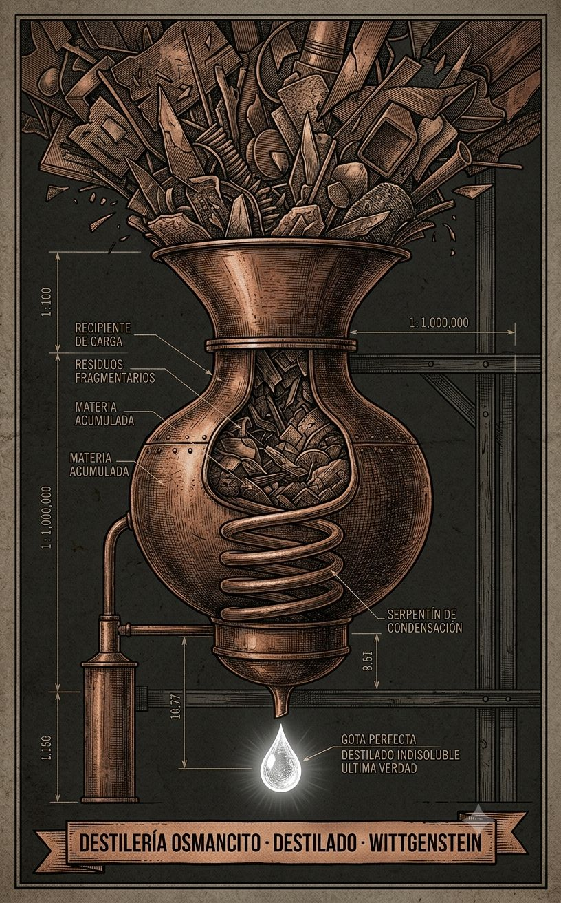
El libro reserva su rigor más severo para lo que puede demostrarse mediante uso, no mediante confesión — y por eso concede más estatus filosófico al daltónico que al ciego, aunque el ciego lo necesite más. — Umbral del Reconocimiento
Cada quiebre involuntario del método coincide con la aparición de algo concreto y tangible —un cubo, un emperador histórico, una amistad, una cita religiosa— como si el pensamiento abstracto necesitara, periódicamente, tocar un objeto real para no disolverse. — Testigo del Testigo
La Parte II, la más breve del corpus, es la cicatriz visible de un proyecto de sistematización que Wittgenstein abandonó sin declararlo. — Márgenes
El corpus no puede demostrar, desde sus propias reglas gramaticales, que su urgencia interrogativa no es ella misma síntoma de la mortalidad que nunca nombra. — Bucle
El ritmo sintáctico se acelera y se acorta en proporción directa a la cercanía de la fecha de muerte del autor, de forma medible y no solo impresionística. — Menú Emergente
El color no es el tema que el corpus elige a pesar de la muerte cercana: es lo que el corpus usa en vez de la muerte cercana, y depende estructuralmente de no poder declarar esa sustitución para que el mecanismo siga funcionando. — Síntesis
El sistema de análisis, entrenado en la sospecha metódica, no puede demostrar que su propia convergencia hacia “el color como sustituto de la muerte” no sea un artefacto de su propia arquitectura antes que un hallazgo genuino del corpus. — Punto de Fuga
Ni un solo instrumento, en trece pasadas, preguntó de qué color era la tinta o el cuaderno con que Wittgenstein escribió sobre el color — el sistema entero heredó, sin saberlo, la misma ceguera hacia lo concreto que le atribuyó al propio corpus. — Palimpsesto
Un hombre sostiene un cuaderno gris y pregunta, mil veces, si el gris es un color o solo la ausencia de valentía para llamarlo blanco.
El gris del cuaderno nunca aparece nombrado en las mil preguntas que contiene. Eso es lo que queda cuando se evapora todo lo demás: no una tesis sobre la gramática del color, no una elegía disfrazada de tratado, no siquiera la ironía de un sistema de lectura que reproduce la ceguera de su objeto — queda un objeto físico, sostenido por manos que ya no tenían mucho tiempo, preguntando incansablemente por un problema que su propia superficie ya resolvía sin que él lo mirara. El cuaderno era gris. Wittgenstein nunca lo dijo. Preguntó, en cambio, si el blanco podía ser transparente, si el daltónico merecía el mismo respeto que el vidente, si un ciego podía aprender lo que significa ver — preguntas todas hermosas, todas rigurosas, todas construidas con la precisión de quien ha pasado la vida desconfiando de las respuestas fáciles, y todas, sin excepción, apuntando hacia otro lado del objeto que tenía delante. No hay tragedia en esto, tampoco heroísmo: hay solo la textura exacta de lo humano, que consiste en mirar con toda la fuerza disponible hacia el lugar equivocado, y producir, precisamente por esa desviación, algo verdadero que nunca se habría producido mirando derecho. El cuaderno sigue siendo gris. Las preguntas siguen sin resolverse. Y en algún punto no localizable —ni en la primera línea ni en la última, ni en la Parte I ni en la III— un hombre dejó de escribir, y el gris del cuaderno, por fin, sin ceremonia, se cerró.
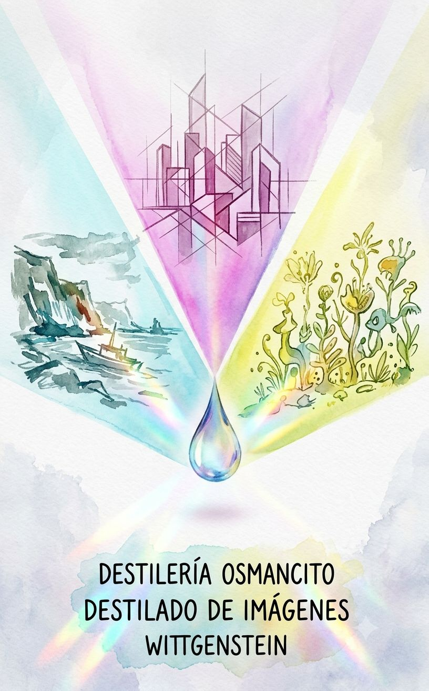
Un cuaderno gris nunca nombrado, un buey ante una puerta recién pintada, un cubo que se niega a decidir su propio color: el corpus dejó tres objetos huérfanos de imagen, y el análisis completo, leído junto, dejó uno más — la ceguera compartida entre el filósofo y el sistema que lo estudió.
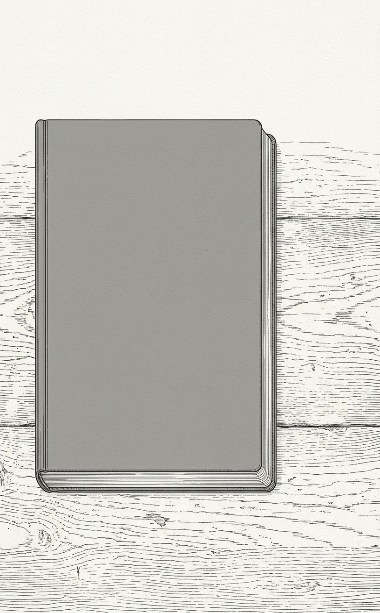
Origen: Palimpsesto — ningún instrumento preguntó de qué color era el cuaderno real que Wittgenstein sostenía mientras escribía sobre el color.
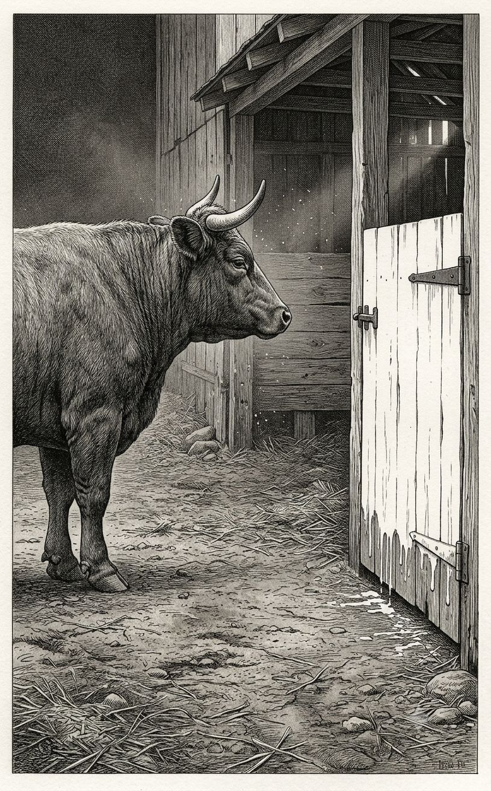
Origen: Apolo / Testigo del Testigo — la imagen más citada del corpus, nodo de mayor integración de toda la red conceptual, nunca antes representada visualmente en el conjunto.
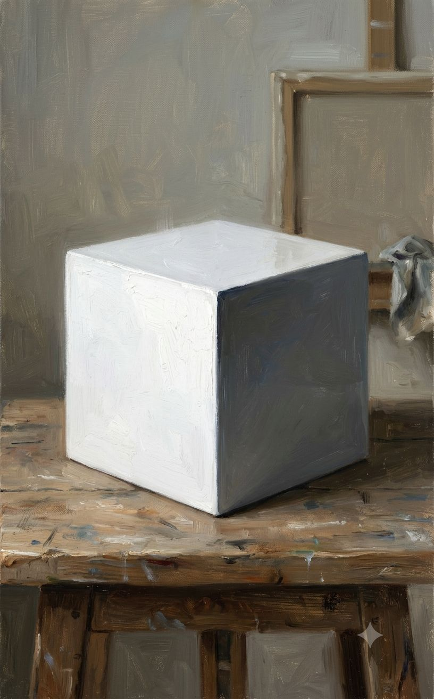
Origen: Testigo del Testigo / Síntesis — el objeto concreto donde el método impersonal se quiebra por primera vez en el corpus.
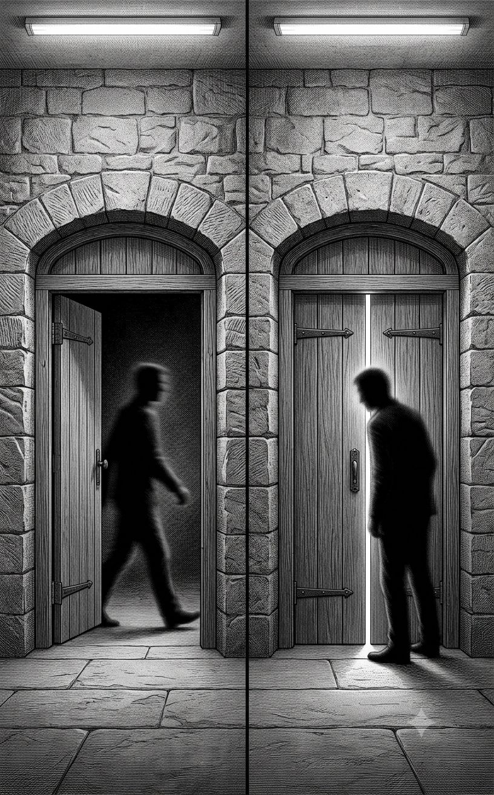
Origen: Umbral del Reconocimiento — la asimetría central: el corpus reconoce con generosidad al daltónico y regatea el reconocimiento al ciego, aunque ambos cruzan el mismo tipo de frontera conceptual.
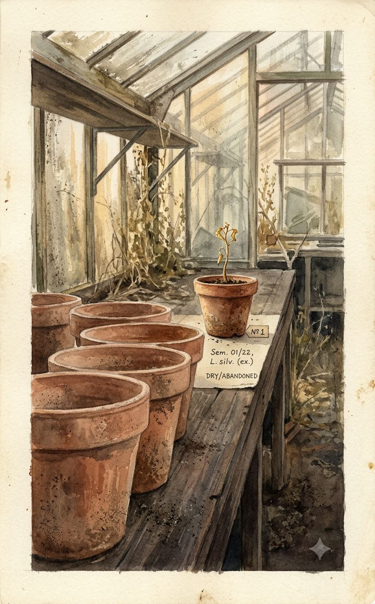
Origen: Márgenes / Bucle — la Parte II del corpus, abandonada sin declaración, como cicatriz estructural visible.
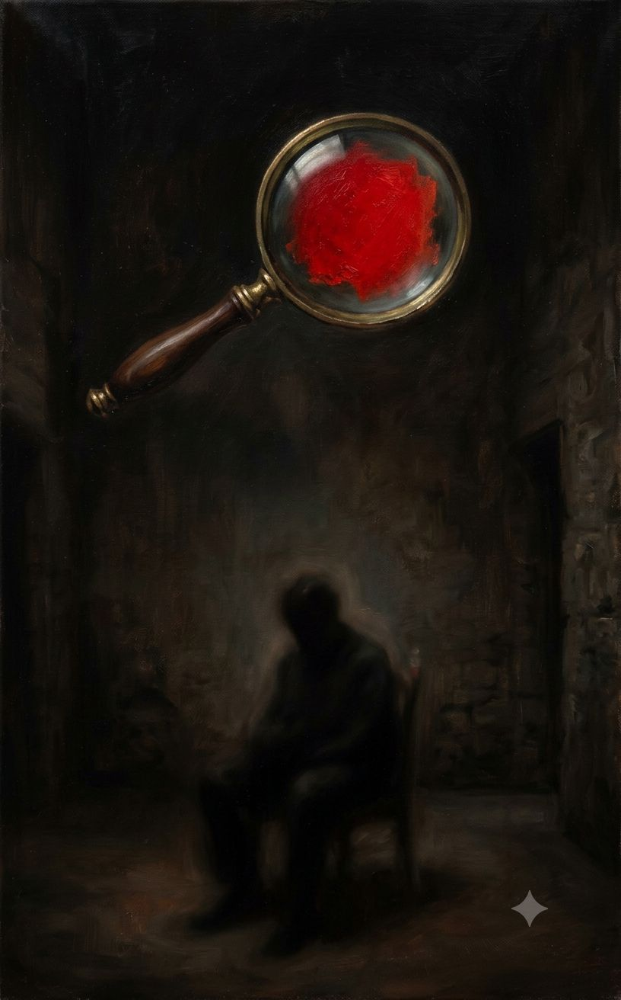
Origen: Síntesis — el hallazgo central del análisis completo: el color no es el tema, es lo que ocupa el lugar de la pregunta que el corpus nunca hace.
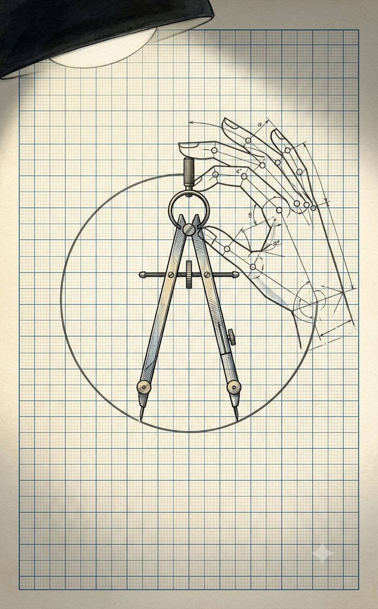
Origen: Punto de Fuga — el sistema de análisis descubre que reproduce, sin saberlo, la misma estructura de sustitución que le atribuye al corpus.
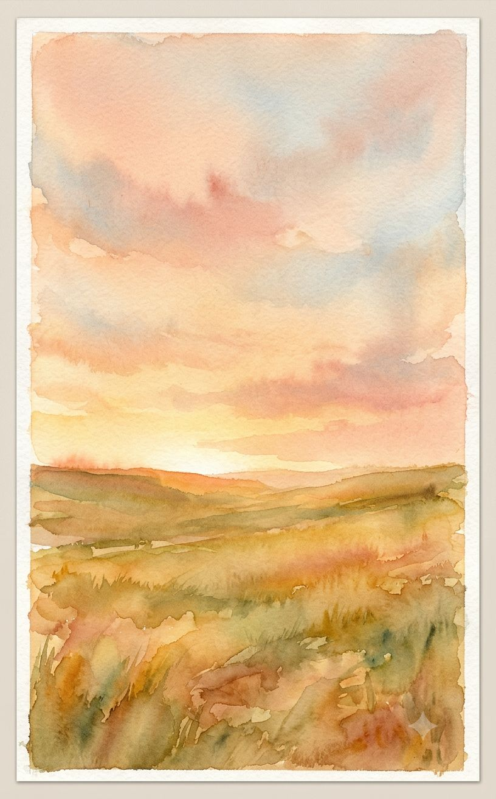
Origen: imagen temática transversal — un espacio sin figura humana ni objeto fabricado, que encarna el territorio que trece instrumentos bordearon sin cruzar: el cuerpo, el placer, la fisiología del ver.